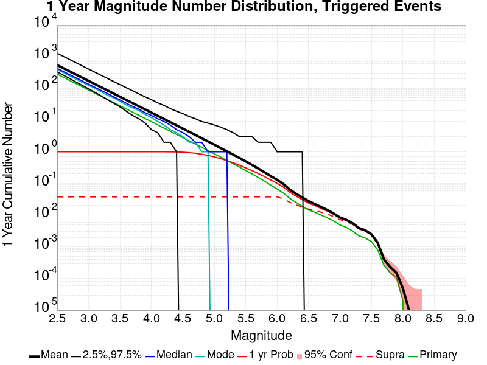
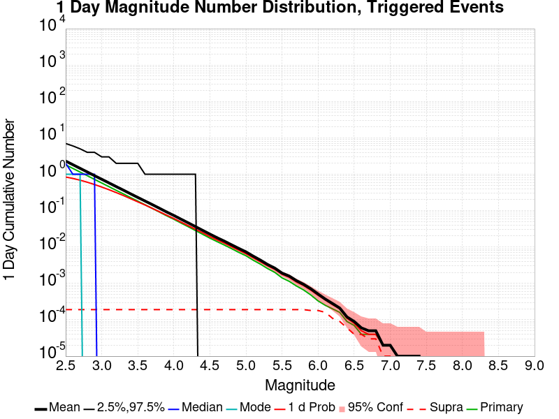
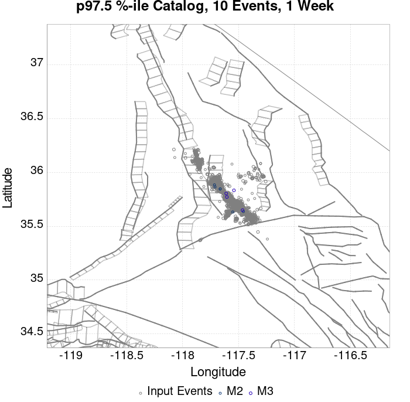
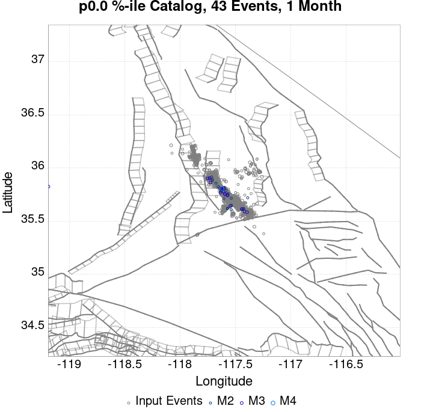
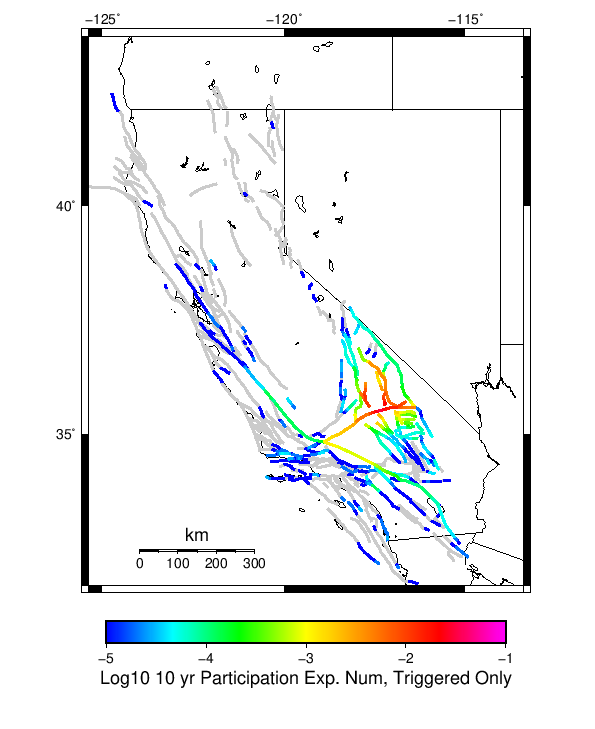
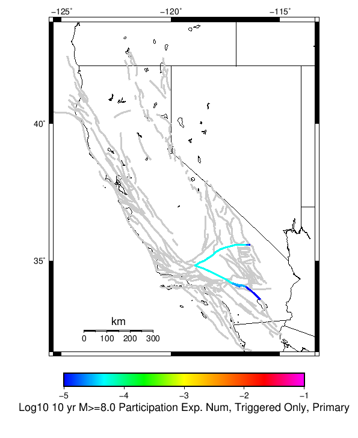
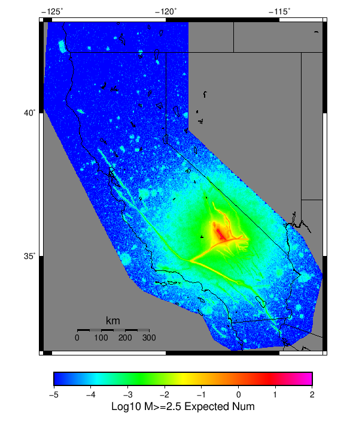

| ComCat M7.1 (ci38457511), 122 Days After, ShakeMap Surfaces | |
|---|---|
| Num Simulations | 24296 (incomplete) |
| Start Time | 2019/11/05 03:05:42 UTC |
| Start Time Epoch Milliseconds | 1572923142971 |
| Duration | 10 Years |
| Includes Spontaneous? | false |
| Trigger Ruptures | 2373 Trigger Ruptures |
| First: M3.98 at 2019/07/04 17:02:55 UTC | |
| Last: M2.52 at 2019/11/05 02:13:21 UTC | |
| Largest: M7.1 at 2019/07/06 03:19:53 UTC | |
| Trigger Ruptures | (none) |
| Config Generated With | u3etas_comcat_event_config_builder.sh --event-id ci38457511 --num-simulations 100000 --days-before 7 --end-now --mag-complete 3.5 --finite-surf-shakemap --finite-surf-shakemap-min-mag 5 --hpc-site USC_HPC --nodes 36 --hours 24 --queue scec |
| Magnitude | 1 Hour Prob | 1 Day Prob | 1 Week Prob | 1 Month Prob | 1 Year Prob | 10 Year Prob |
|---|---|---|---|---|---|---|
| M≥4 | 2.39E-3 (0.24%) | 0.061 (6.10%) | 0.350 (34.95%) | 0.817 (81.68%) | 1.000 (100.00%) | 1.000 (100.00%) |
| M≥4.5 | 5.35E-4 (0.05%) | 0.019 (1.89%) | 0.127 (12.69%) | 0.428 (42.79%) | 0.971 (97.10%) | 1.000 (99.98%) |
| M≥5 | 2.88E-4 (0.03%) | 6.83E-3 (0.68%) | 0.045 (4.52%) | 0.169 (16.91%) | 0.688 (68.84%) | 0.940 (94.00%) |
| M≥5.5 | 0.000 (0.00%) | 2.14E-3 (0.21%) | 0.013 (1.32%) | 0.055 (5.49%) | 0.311 (31.14%) | 0.604 (60.45%) |
| M≥6 | 0.000 (0.00%) | 3.70E-4 (0.04%) | 3.95E-3 (0.40%) | 0.016 (1.58%) | 0.100 (10.01%) | 0.238 (23.79%) |
| M≥6.5 | 0.000 (0.00%) | 0.000 (0.00%) | 1.07E-3 (0.11%) | 3.87E-3 (0.39%) | 0.023 (2.34%) | 0.058 (5.81%) |
| M≥7 | 0.000 (0.00%) | 0.000 (0.00%) | 2.88E-4 (0.03%) | 1.36E-3 (0.14%) | 8.15E-3 (0.81%) | 0.021 (2.14%) |
| M≥7.1 | 0.000 (0.00%) | 0.000 (0.00%) | 1.65E-4 (0.02%) | 9.88E-4 (0.10%) | 6.91E-3 (0.69%) | 0.018 (1.84%) |
| M≥7.5 | 0.000 (0.00%) | 0.000 (0.00%) | 4.12E-5 (0.00%) | 2.88E-4 (0.03%) | 2.30E-3 (0.23%) | 6.09E-3 (0.61%) |
| M≥8 | 0.000 (0.00%) | 0.000 (0.00%) | 0.000 (0.00%) | 0.000 (0.00%) | 4.12E-5 (0.00%) | 1.23E-4 (0.01%) |
Legend
| Mag | Mean | 2.5 %ile | 97.5 %ile | Median | Mode | 10 yr Probability | 10 yr Supra-Seis Prob | Primary Aftershocks Mean |
|---|---|---|---|---|---|---|---|---|
| M≥2.5 | 1450.707 | 874.000 | 4143.000 | 1135.000 | 998.000 | 1.000 (100.00%) | 0.092 (9.23%) | 647.927 |
| M≥2.6 | 1152.195 | 691.000 | 3284.000 | 902.000 | 789.000 | 1.000 (100.00%) | 0.092 (9.23%) | 514.633 |
| M≥2.7 | 915.062 | 545.000 | 2620.000 | 716.000 | 637.000 | 1.000 (100.00%) | 0.092 (9.23%) | 408.661 |
| M≥2.8 | 726.831 | 430.000 | 2081.000 | 570.000 | 522.000 | 1.000 (100.00%) | 0.092 (9.23%) | 324.601 |
| M≥2.9 | 577.243 | 338.000 | 1653.000 | 453.000 | 404.000 | 1.000 (100.00%) | 0.092 (9.23%) | 257.826 |
| M≥3 | 458.471 | 266.000 | 1312.000 | 360.000 | 323.000 | 1.000 (100.00%) | 0.092 (9.23%) | 204.796 |
| M≥3.1 | 364.174 | 208.000 | 1047.000 | 287.000 | 251.000 | 1.000 (100.00%) | 0.092 (9.23%) | 162.678 |
| M≥3.2 | 289.288 | 162.000 | 831.000 | 228.000 | 207.000 | 1.000 (100.00%) | 0.092 (9.23%) | 129.227 |
| M≥3.3 | 229.709 | 127.000 | 663.000 | 181.000 | 165.000 | 1.000 (100.00%) | 0.092 (9.23%) | 102.613 |
| M≥3.4 | 182.386 | 99.000 | 528.000 | 144.000 | 124.000 | 1.000 (100.00%) | 0.092 (9.23%) | 81.470 |
| M≥3.5 | 144.852 | 76.000 | 416.000 | 115.000 | 105.000 | 1.000 (100.00%) | 0.092 (9.23%) | 64.703 |
| M≥3.6 | 114.986 | 59.000 | 330.000 | 91.000 | 78.000 | 1.000 (100.00%) | 0.092 (9.23%) | 51.351 |
| M≥3.7 | 91.290 | 45.000 | 262.000 | 73.000 | 68.000 | 1.000 (100.00%) | 0.092 (9.23%) | 40.764 |
| M≥3.8 | 72.519 | 34.000 | 210.000 | 58.000 | 53.000 | 1.000 (100.00%) | 0.092 (9.23%) | 32.371 |
| M≥3.9 | 57.602 | 26.000 | 167.000 | 46.000 | 39.000 | 1.000 (100.00%) | 0.092 (9.23%) | 25.724 |
| M≥4 | 45.744 | 20.000 | 133.000 | 37.000 | 34.000 | 1.000 (100.00%) | 0.092 (9.23%) | 20.425 |
| M≥4.1 | 36.313 | 15.000 | 107.000 | 29.000 | 24.000 | 1.000 (100.00%) | 0.092 (9.23%) | 16.226 |
| M≥4.2 | 28.813 | 11.000 | 85.000 | 23.000 | 20.000 | 1.000 (100.00%) | 0.092 (9.23%) | 12.871 |
| M≥4.3 | 22.855 | 8.000 | 68.000 | 18.000 | 15.000 | 1.000 (100.00%) | 0.092 (9.23%) | 10.209 |
| M≥4.4 | 18.143 | 6.000 | 55.000 | 14.000 | 13.000 | 1.000 (100.00%) | 0.092 (9.23%) | 8.107 |
| M≥4.5 | 14.359 | 4.000 | 45.000 | 11.000 | 10.000 | 1.000 (99.98%) | 0.092 (9.23%) | 6.423 |
| M≥4.6 | 11.368 | 3.000 | 35.000 | 9.000 | 7.000 | 0.999 (99.89%) | 0.092 (9.23%) | 5.081 |
| M≥4.7 | 9.013 | 2.000 | 29.000 | 7.000 | 5.000 | 0.996 (99.59%) | 0.092 (9.23%) | 4.034 |
| M≥4.8 | 7.127 | 1.000 | 23.000 | 6.000 | 5.000 | 0.989 (98.93%) | 0.092 (9.23%) | 3.189 |
| M≥4.9 | 5.633 | 0.000 | 19.000 | 4.000 | 3.000 | 0.971 (97.11%) | 0.092 (9.23%) | 2.526 |
| M≥5 | 4.452 | 0.000 | 15.000 | 3.000 | 2.000 | 0.940 (94.00%) | 0.092 (9.23%) | 1.992 |
| M≥5.1 | 3.517 | 0.000 | 13.000 | 3.000 | 2.000 | 0.896 (89.58%) | 0.092 (9.23%) | 1.574 |
| M≥5.2 | 2.778 | 0.000 | 10.000 | 2.000 | 1.000 | 0.840 (84.01%) | 0.092 (9.23%) | 1.247 |
| M≥5.3 | 2.180 | 0.000 | 9.000 | 1.000 | 1.000 | 0.769 (76.94%) | 0.092 (9.23%) | 0.978 |
| M≥5.4 | 1.705 | 0.000 | 7.000 | 1.000 | 0.000 | 0.689 (68.86%) | 0.092 (9.23%) | 0.770 |
| M≥5.5 | 1.331 | 0.000 | 6.000 | 1.000 | 0.000 | 0.604 (60.45%) | 0.092 (9.23%) | 0.602 |
| M≥5.6 | 1.027 | 0.000 | 5.000 | 1.000 | 0.000 | 0.520 (52.03%) | 0.092 (9.23%) | 0.466 |
| M≥5.7 | 0.787 | 0.000 | 4.000 | 0.000 | 0.000 | 0.438 (43.77%) | 0.092 (9.23%) | 0.359 |
| M≥5.8 | 0.601 | 0.000 | 3.000 | 0.000 | 0.000 | 0.362 (36.19%) | 0.092 (9.22%) | 0.274 |
| M≥5.9 | 0.449 | 0.000 | 3.000 | 0.000 | 0.000 | 0.294 (29.38%) | 0.092 (9.22%) | 0.207 |
| M≥6 | 0.345 | 0.000 | 2.000 | 0.000 | 0.000 | 0.238 (23.79%) | 0.092 (9.21%) | 0.158 |
| M≥6.1 | 0.252 | 0.000 | 2.000 | 0.000 | 0.000 | 0.184 (18.38%) | 0.079 (7.88%) | 0.116 |
| M≥6.2 | 0.167 | 0.000 | 2.000 | 0.000 | 0.000 | 0.129 (12.91%) | 0.061 (6.06%) | 0.078 |
| M≥6.3 | 0.123 | 0.000 | 1.000 | 0.000 | 0.000 | 0.098 (9.78%) | 0.050 (4.98%) | 0.057 |
| M≥6.4 | 0.093 | 0.000 | 1.000 | 0.000 | 0.000 | 0.075 (7.50%) | 0.044 (4.38%) | 0.041 |
| M≥6.5 | 0.071 | 0.000 | 1.000 | 0.000 | 0.000 | 0.058 (5.81%) | 0.037 (3.74%) | 0.031 |
| M≥6.6 | 0.057 | 0.000 | 1.000 | 0.000 | 0.000 | 0.050 (4.95%) | 0.034 (3.40%) | 0.027 |
| M≥6.7 | 0.046 | 0.000 | 1.000 | 0.000 | 0.000 | 0.040 (4.04%) | 0.029 (2.94%) | 0.022 |
| M≥6.8 | 0.038 | 0.000 | 1.000 | 0.000 | 0.000 | 0.034 (3.39%) | 0.026 (2.59%) | 0.018 |
| M≥6.9 | 0.028 | 0.000 | 1.000 | 0.000 | 0.000 | 0.027 (2.68%) | 0.021 (2.15%) | 0.014 |
| M≥7 | 0.022 | 0.000 | 0.000 | 0.000 | 0.000 | 0.021 (2.14%) | 0.018 (1.84%) | 0.011 |
| M≥7.1 | 0.019 | 0.000 | 0.000 | 0.000 | 0.000 | 0.018 (1.84%) | 0.016 (1.63%) | 9.55E-3 |
| M≥7.2 | 0.014 | 0.000 | 0.000 | 0.000 | 0.000 | 0.014 (1.40%) | 0.013 (1.29%) | 6.96E-3 |
| M≥7.3 | 9.67E-3 | 0.000 | 0.000 | 0.000 | 0.000 | 9.59E-3 (0.96%) | 8.85E-3 (0.88%) | 4.73E-3 |
| M≥7.4 | 8.11E-3 | 0.000 | 0.000 | 0.000 | 0.000 | 8.07E-3 (0.81%) | 7.74E-3 (0.77%) | 3.91E-3 |
| M≥7.5 | 6.09E-3 | 0.000 | 0.000 | 0.000 | 0.000 | 6.09E-3 (0.61%) | 5.97E-3 (0.60%) | 3.00E-3 |
| M≥7.6 | 2.63E-3 | 0.000 | 0.000 | 0.000 | 0.000 | 2.63E-3 (0.26%) | 2.63E-3 (0.26%) | 1.19E-3 |
| M≥7.7 | 1.03E-3 | 0.000 | 0.000 | 0.000 | 0.000 | 1.03E-3 (0.10%) | 1.03E-3 (0.10%) | 5.76E-4 |
| M≥7.8 | 7.41E-4 | 0.000 | 0.000 | 0.000 | 0.000 | 7.41E-4 (0.07%) | 7.41E-4 (0.07%) | 4.53E-4 |
| M≥7.9 | 4.53E-4 | 0.000 | 0.000 | 0.000 | 0.000 | 4.53E-4 (0.05%) | 4.53E-4 (0.05%) | 2.88E-4 |
| M≥8 | 1.23E-4 | 0.000 | 0.000 | 0.000 | 0.000 | 1.23E-4 (0.01%) | 1.23E-4 (0.01%) | 4.12E-5 |
| M≥8.1 | 0.000 | 0.000 | 0.000 | 0.000 | 0.000 | 0.000 (0.00%) | 0.000 (0.00%) | 0.000 |
| M≥8.2 | 0.000 | 0.000 | 0.000 | 0.000 | 0.000 | 0.000 (0.00%) | 0.000 (0.00%) | 0.000 |
| M≥8.3 | 0.000 | 0.000 | 0.000 | 0.000 | 0.000 | 0.000 (0.00%) | 0.000 (0.00%) | 0.000 |
| M≥8.4 | 0.000 | 0.000 | 0.000 | 0.000 | 0.000 | 0.000 (0.00%) | 0.000 (0.00%) | 0.000 |
| M≥8.5 | 0.000 | 0.000 | 0.000 | 0.000 | 0.000 | 0.000 (0.00%) | 0.000 (0.00%) | 0.000 |
| M≥8.6 | 0.000 | 0.000 | 0.000 | 0.000 | 0.000 | 0.000 (0.00%) | 0.000 (0.00%) | 0.000 |
| M≥8.7 | 0.000 | 0.000 | 0.000 | 0.000 | 0.000 | 0.000 (0.00%) | 0.000 (0.00%) | 0.000 |
| M≥8.8 | 0.000 | 0.000 | 0.000 | 0.000 | 0.000 | 0.000 (0.00%) | 0.000 (0.00%) | 0.000 |
| M≥8.9 | 0.000 | 0.000 | 0.000 | 0.000 | 0.000 | 0.000 (0.00%) | 0.000 (0.00%) | 0.000 |
| M≥9 | 0.000 | 0.000 | 0.000 | 0.000 | 0.000 | 0.000 (0.00%) | 0.000 (0.00%) | 0.000 |
Legend

| Mag | Mean | 2.5 %ile | 97.5 %ile | Median | Mode | 1 yr Probability | 1 yr Supra-Seis Prob | Primary Aftershocks Mean |
|---|---|---|---|---|---|---|---|---|
| M≥2.5 | 539.732 | 331.000 | 1250.000 | 426.000 | 386.000 | 1.000 (100.00%) | 0.037 (3.71%) | 281.694 |
| M≥2.6 | 428.577 | 260.000 | 993.000 | 339.000 | 314.000 | 1.000 (100.00%) | 0.037 (3.71%) | 223.715 |
| M≥2.7 | 340.395 | 203.000 | 790.000 | 270.000 | 247.000 | 1.000 (100.00%) | 0.037 (3.71%) | 177.654 |
| M≥2.8 | 270.400 | 159.000 | 629.000 | 215.000 | 197.000 | 1.000 (100.00%) | 0.037 (3.71%) | 141.111 |
| M≥2.9 | 214.759 | 124.000 | 501.000 | 171.000 | 154.000 | 1.000 (100.00%) | 0.037 (3.71%) | 112.063 |
| M≥3 | 170.585 | 97.000 | 399.000 | 136.000 | 125.000 | 1.000 (100.00%) | 0.037 (3.71%) | 89.023 |
| M≥3.1 | 135.512 | 75.000 | 317.000 | 108.000 | 101.000 | 1.000 (100.00%) | 0.037 (3.71%) | 70.736 |
| M≥3.2 | 107.670 | 58.000 | 255.000 | 86.000 | 79.000 | 1.000 (100.00%) | 0.037 (3.71%) | 56.191 |
| M≥3.3 | 85.492 | 44.000 | 200.000 | 69.000 | 66.000 | 1.000 (100.00%) | 0.037 (3.71%) | 44.607 |
| M≥3.4 | 67.895 | 34.000 | 161.000 | 55.000 | 50.000 | 1.000 (100.00%) | 0.037 (3.71%) | 35.434 |
| M≥3.5 | 53.935 | 26.000 | 128.000 | 43.000 | 38.000 | 1.000 (100.00%) | 0.037 (3.71%) | 28.143 |
| M≥3.6 | 42.813 | 19.000 | 102.000 | 34.000 | 31.000 | 1.000 (100.00%) | 0.037 (3.71%) | 22.332 |
| M≥3.7 | 33.980 | 14.000 | 82.000 | 27.000 | 26.000 | 1.000 (100.00%) | 0.037 (3.71%) | 17.720 |
| M≥3.8 | 26.978 | 11.000 | 65.000 | 22.000 | 17.000 | 1.000 (100.00%) | 0.037 (3.71%) | 14.071 |
| M≥3.9 | 21.466 | 8.000 | 53.000 | 17.000 | 14.000 | 1.000 (100.00%) | 0.037 (3.71%) | 11.193 |
| M≥4 | 17.044 | 5.000 | 43.000 | 14.000 | 11.000 | 1.000 (100.00%) | 0.037 (3.71%) | 8.874 |
| M≥4.1 | 13.534 | 4.000 | 35.000 | 11.000 | 9.000 | 1.000 (99.99%) | 0.037 (3.71%) | 7.051 |
| M≥4.2 | 10.746 | 2.000 | 28.000 | 9.000 | 7.000 | 0.999 (99.91%) | 0.037 (3.71%) | 5.600 |
| M≥4.3 | 8.508 | 2.000 | 23.000 | 7.000 | 6.000 | 0.995 (99.53%) | 0.037 (3.71%) | 4.436 |
| M≥4.4 | 6.760 | 1.000 | 19.000 | 5.000 | 4.000 | 0.987 (98.72%) | 0.037 (3.71%) | 3.524 |
| M≥4.5 | 5.350 | 0.000 | 16.000 | 4.000 | 3.000 | 0.971 (97.10%) | 0.037 (3.71%) | 2.791 |
| M≥4.6 | 4.230 | 0.000 | 13.000 | 3.000 | 2.000 | 0.942 (94.18%) | 0.037 (3.71%) | 2.209 |
| M≥4.7 | 3.353 | 0.000 | 11.000 | 2.000 | 2.000 | 0.898 (89.82%) | 0.037 (3.71%) | 1.752 |
| M≥4.8 | 2.653 | 0.000 | 9.000 | 2.000 | 1.000 | 0.840 (83.99%) | 0.037 (3.71%) | 1.384 |
| M≥4.9 | 2.096 | 0.000 | 8.000 | 1.000 | 1.000 | 0.767 (76.74%) | 0.037 (3.71%) | 1.094 |
| M≥5 | 1.654 | 0.000 | 6.000 | 1.000 | 0.000 | 0.688 (68.84%) | 0.037 (3.71%) | 0.863 |
| M≥5.1 | 1.306 | 0.000 | 6.000 | 1.000 | 0.000 | 0.608 (60.82%) | 0.037 (3.71%) | 0.683 |
| M≥5.2 | 1.025 | 0.000 | 5.000 | 1.000 | 0.000 | 0.525 (52.53%) | 0.037 (3.71%) | 0.537 |
| M≥5.3 | 0.803 | 0.000 | 4.000 | 0.000 | 0.000 | 0.449 (44.91%) | 0.037 (3.71%) | 0.420 |
| M≥5.4 | 0.628 | 0.000 | 3.000 | 0.000 | 0.000 | 0.375 (37.50%) | 0.037 (3.71%) | 0.330 |
| M≥5.5 | 0.492 | 0.000 | 3.000 | 0.000 | 0.000 | 0.311 (31.14%) | 0.037 (3.71%) | 0.259 |
| M≥5.6 | 0.378 | 0.000 | 2.000 | 0.000 | 0.000 | 0.254 (25.38%) | 0.037 (3.71%) | 0.201 |
| M≥5.7 | 0.287 | 0.000 | 2.000 | 0.000 | 0.000 | 0.204 (20.41%) | 0.037 (3.71%) | 0.154 |
| M≥5.8 | 0.220 | 0.000 | 2.000 | 0.000 | 0.000 | 0.163 (16.34%) | 0.037 (3.71%) | 0.119 |
| M≥5.9 | 0.166 | 0.000 | 1.000 | 0.000 | 0.000 | 0.128 (12.81%) | 0.037 (3.70%) | 0.090 |
| M≥6 | 0.126 | 0.000 | 1.000 | 0.000 | 0.000 | 0.100 (10.01%) | 0.037 (3.70%) | 0.068 |
| M≥6.1 | 0.093 | 0.000 | 1.000 | 0.000 | 0.000 | 0.075 (7.51%) | 0.032 (3.19%) | 0.050 |
| M≥6.2 | 0.061 | 0.000 | 1.000 | 0.000 | 0.000 | 0.051 (5.11%) | 0.024 (2.43%) | 0.033 |
| M≥6.3 | 0.045 | 0.000 | 1.000 | 0.000 | 0.000 | 0.038 (3.77%) | 0.020 (2.03%) | 0.024 |
| M≥6.4 | 0.035 | 0.000 | 1.000 | 0.000 | 0.000 | 0.029 (2.94%) | 0.018 (1.78%) | 0.018 |
| M≥6.5 | 0.027 | 0.000 | 0.000 | 0.000 | 0.000 | 0.023 (2.34%) | 0.015 (1.55%) | 0.014 |
| M≥6.6 | 0.022 | 0.000 | 0.000 | 0.000 | 0.000 | 0.020 (1.97%) | 0.014 (1.41%) | 0.012 |
| M≥6.7 | 0.018 | 0.000 | 0.000 | 0.000 | 0.000 | 0.016 (1.60%) | 0.012 (1.20%) | 9.22E-3 |
| M≥6.8 | 0.014 | 0.000 | 0.000 | 0.000 | 0.000 | 0.013 (1.34%) | 0.011 (1.07%) | 7.61E-3 |
| M≥6.9 | 0.011 | 0.000 | 0.000 | 0.000 | 0.000 | 0.010 (1.05%) | 8.56E-3 (0.86%) | 5.80E-3 |
| M≥7 | 8.27E-3 | 0.000 | 0.000 | 0.000 | 0.000 | 8.15E-3 (0.81%) | 7.33E-3 (0.73%) | 4.45E-3 |
| M≥7.1 | 6.96E-3 | 0.000 | 0.000 | 0.000 | 0.000 | 6.91E-3 (0.69%) | 6.34E-3 (0.63%) | 3.62E-3 |
| M≥7.2 | 5.31E-3 | 0.000 | 0.000 | 0.000 | 0.000 | 5.27E-3 (0.53%) | 4.98E-3 (0.50%) | 2.72E-3 |
| M≥7.3 | 3.70E-3 | 0.000 | 0.000 | 0.000 | 0.000 | 3.70E-3 (0.37%) | 3.46E-3 (0.35%) | 1.98E-3 |
| M≥7.4 | 3.05E-3 | 0.000 | 0.000 | 0.000 | 0.000 | 3.05E-3 (0.30%) | 2.88E-3 (0.29%) | 1.56E-3 |
| M≥7.5 | 2.30E-3 | 0.000 | 0.000 | 0.000 | 0.000 | 2.30E-3 (0.23%) | 2.22E-3 (0.22%) | 1.32E-3 |
| M≥7.6 | 9.47E-4 | 0.000 | 0.000 | 0.000 | 0.000 | 9.47E-4 (0.09%) | 9.47E-4 (0.09%) | 4.53E-4 |
| M≥7.7 | 4.12E-4 | 0.000 | 0.000 | 0.000 | 0.000 | 4.12E-4 (0.04%) | 4.12E-4 (0.04%) | 2.47E-4 |
| M≥7.8 | 2.88E-4 | 0.000 | 0.000 | 0.000 | 0.000 | 2.88E-4 (0.03%) | 2.88E-4 (0.03%) | 1.65E-4 |
| M≥7.9 | 2.06E-4 | 0.000 | 0.000 | 0.000 | 0.000 | 2.06E-4 (0.02%) | 2.06E-4 (0.02%) | 1.23E-4 |
| M≥8 | 4.12E-5 | 0.000 | 0.000 | 0.000 | 0.000 | 4.12E-5 (0.00%) | 4.12E-5 (0.00%) | 0.000 |
| M≥8.1 | 0.000 | 0.000 | 0.000 | 0.000 | 0.000 | 0.000 (0.00%) | 0.000 (0.00%) | 0.000 |
| M≥8.2 | 0.000 | 0.000 | 0.000 | 0.000 | 0.000 | 0.000 (0.00%) | 0.000 (0.00%) | 0.000 |
| M≥8.3 | 0.000 | 0.000 | 0.000 | 0.000 | 0.000 | 0.000 (0.00%) | 0.000 (0.00%) | 0.000 |
| M≥8.4 | 0.000 | 0.000 | 0.000 | 0.000 | 0.000 | 0.000 (0.00%) | 0.000 (0.00%) | 0.000 |
| M≥8.5 | 0.000 | 0.000 | 0.000 | 0.000 | 0.000 | 0.000 (0.00%) | 0.000 (0.00%) | 0.000 |
| M≥8.6 | 0.000 | 0.000 | 0.000 | 0.000 | 0.000 | 0.000 (0.00%) | 0.000 (0.00%) | 0.000 |
| M≥8.7 | 0.000 | 0.000 | 0.000 | 0.000 | 0.000 | 0.000 (0.00%) | 0.000 (0.00%) | 0.000 |
| M≥8.8 | 0.000 | 0.000 | 0.000 | 0.000 | 0.000 | 0.000 (0.00%) | 0.000 (0.00%) | 0.000 |
| M≥8.9 | 0.000 | 0.000 | 0.000 | 0.000 | 0.000 | 0.000 (0.00%) | 0.000 (0.00%) | 0.000 |
| M≥9 | 0.000 | 0.000 | 0.000 | 0.000 | 0.000 | 0.000 (0.00%) | 0.000 (0.00%) | 0.000 |
Legend
| Mag | Mean | 2.5 %ile | 97.5 %ile | Median | Mode | 1 mo Probability | 1 mo Supra-Seis Prob | Primary Aftershocks Mean |
|---|---|---|---|---|---|---|---|---|
| M≥2.5 | 76.007 | 40.000 | 176.000 | 61.000 | 57.000 | 1.000 (100.00%) | 6.17E-3 (0.62%) | 47.229 |
| M≥2.6 | 60.355 | 31.000 | 140.000 | 48.000 | 45.000 | 1.000 (100.00%) | 6.17E-3 (0.62%) | 37.504 |
| M≥2.7 | 47.951 | 23.000 | 112.000 | 38.000 | 36.000 | 1.000 (100.00%) | 6.17E-3 (0.62%) | 29.786 |
| M≥2.8 | 38.062 | 17.000 | 89.000 | 30.000 | 30.000 | 1.000 (100.00%) | 6.17E-3 (0.62%) | 23.630 |
| M≥2.9 | 30.242 | 13.000 | 71.000 | 24.000 | 23.000 | 1.000 (100.00%) | 6.17E-3 (0.62%) | 18.764 |
| M≥3 | 24.003 | 9.000 | 57.000 | 19.000 | 18.000 | 1.000 (100.00%) | 6.17E-3 (0.62%) | 14.905 |
| M≥3.1 | 19.069 | 7.000 | 46.000 | 15.000 | 14.000 | 1.000 (100.00%) | 6.17E-3 (0.62%) | 11.839 |
| M≥3.2 | 15.154 | 5.000 | 37.000 | 12.000 | 11.000 | 1.000 (100.00%) | 6.17E-3 (0.62%) | 9.407 |
| M≥3.3 | 12.039 | 3.000 | 30.000 | 10.000 | 9.000 | 1.000 (99.98%) | 6.17E-3 (0.62%) | 7.473 |
| M≥3.4 | 9.552 | 2.000 | 24.000 | 8.000 | 6.000 | 0.999 (99.89%) | 6.17E-3 (0.62%) | 5.935 |
| M≥3.5 | 7.581 | 1.000 | 20.000 | 6.000 | 5.000 | 0.995 (99.49%) | 6.17E-3 (0.62%) | 4.709 |
| M≥3.6 | 6.015 | 1.000 | 16.000 | 5.000 | 4.000 | 0.983 (98.34%) | 6.17E-3 (0.62%) | 3.730 |
| M≥3.7 | 4.775 | 0.000 | 13.000 | 4.000 | 3.000 | 0.961 (96.12%) | 6.17E-3 (0.62%) | 2.961 |
| M≥3.8 | 3.795 | 0.000 | 11.000 | 3.000 | 2.000 | 0.927 (92.74%) | 6.17E-3 (0.62%) | 2.353 |
| M≥3.9 | 3.016 | 0.000 | 9.000 | 2.000 | 2.000 | 0.878 (87.79%) | 6.17E-3 (0.62%) | 1.872 |
| M≥4 | 2.399 | 0.000 | 8.000 | 2.000 | 1.000 | 0.817 (81.68%) | 6.17E-3 (0.62%) | 1.489 |
| M≥4.1 | 1.901 | 0.000 | 7.000 | 1.000 | 1.000 | 0.742 (74.17%) | 6.17E-3 (0.62%) | 1.180 |
| M≥4.2 | 1.511 | 0.000 | 6.000 | 1.000 | 0.000 | 0.662 (66.18%) | 6.17E-3 (0.62%) | 0.938 |
| M≥4.3 | 1.198 | 0.000 | 5.000 | 1.000 | 0.000 | 0.581 (58.06%) | 6.17E-3 (0.62%) | 0.743 |
| M≥4.4 | 0.952 | 0.000 | 4.000 | 1.000 | 0.000 | 0.503 (50.30%) | 6.17E-3 (0.62%) | 0.590 |
| M≥4.5 | 0.753 | 0.000 | 4.000 | 0.000 | 0.000 | 0.428 (42.79%) | 6.17E-3 (0.62%) | 0.468 |
| M≥4.6 | 0.596 | 0.000 | 3.000 | 0.000 | 0.000 | 0.360 (36.00%) | 6.17E-3 (0.62%) | 0.372 |
| M≥4.7 | 0.475 | 0.000 | 3.000 | 0.000 | 0.000 | 0.303 (30.28%) | 6.17E-3 (0.62%) | 0.297 |
| M≥4.8 | 0.378 | 0.000 | 2.000 | 0.000 | 0.000 | 0.252 (25.23%) | 6.17E-3 (0.62%) | 0.237 |
| M≥4.9 | 0.298 | 0.000 | 2.000 | 0.000 | 0.000 | 0.207 (20.72%) | 6.17E-3 (0.62%) | 0.189 |
| M≥5 | 0.235 | 0.000 | 2.000 | 0.000 | 0.000 | 0.169 (16.91%) | 6.17E-3 (0.62%) | 0.149 |
| M≥5.1 | 0.186 | 0.000 | 2.000 | 0.000 | 0.000 | 0.137 (13.68%) | 6.17E-3 (0.62%) | 0.118 |
| M≥5.2 | 0.143 | 0.000 | 1.000 | 0.000 | 0.000 | 0.109 (10.89%) | 6.17E-3 (0.62%) | 0.090 |
| M≥5.3 | 0.112 | 0.000 | 1.000 | 0.000 | 0.000 | 0.088 (8.75%) | 6.17E-3 (0.62%) | 0.071 |
| M≥5.4 | 0.087 | 0.000 | 1.000 | 0.000 | 0.000 | 0.069 (6.95%) | 6.17E-3 (0.62%) | 0.056 |
| M≥5.5 | 0.068 | 0.000 | 1.000 | 0.000 | 0.000 | 0.055 (5.49%) | 6.17E-3 (0.62%) | 0.043 |
| M≥5.6 | 0.052 | 0.000 | 1.000 | 0.000 | 0.000 | 0.043 (4.33%) | 6.17E-3 (0.62%) | 0.034 |
| M≥5.7 | 0.039 | 0.000 | 1.000 | 0.000 | 0.000 | 0.033 (3.30%) | 6.17E-3 (0.62%) | 0.025 |
| M≥5.8 | 0.030 | 0.000 | 1.000 | 0.000 | 0.000 | 0.027 (2.66%) | 6.17E-3 (0.62%) | 0.020 |
| M≥5.9 | 0.023 | 0.000 | 0.000 | 0.000 | 0.000 | 0.021 (2.05%) | 6.13E-3 (0.61%) | 0.015 |
| M≥6 | 0.018 | 0.000 | 0.000 | 0.000 | 0.000 | 0.016 (1.58%) | 6.09E-3 (0.61%) | 0.011 |
| M≥6.1 | 0.013 | 0.000 | 0.000 | 0.000 | 0.000 | 0.012 (1.17%) | 5.35E-3 (0.54%) | 8.48E-3 |
| M≥6.2 | 8.48E-3 | 0.000 | 0.000 | 0.000 | 0.000 | 7.78E-3 (0.78%) | 4.32E-3 (0.43%) | 5.19E-3 |
| M≥6.3 | 6.67E-3 | 0.000 | 0.000 | 0.000 | 0.000 | 6.05E-3 (0.61%) | 3.75E-3 (0.37%) | 3.99E-3 |
| M≥6.4 | 5.19E-3 | 0.000 | 0.000 | 0.000 | 0.000 | 4.69E-3 (0.47%) | 3.17E-3 (0.32%) | 2.88E-3 |
| M≥6.5 | 4.24E-3 | 0.000 | 0.000 | 0.000 | 0.000 | 3.87E-3 (0.39%) | 2.76E-3 (0.28%) | 2.51E-3 |
| M≥6.6 | 3.05E-3 | 0.000 | 0.000 | 0.000 | 0.000 | 2.96E-3 (0.30%) | 2.43E-3 (0.24%) | 1.89E-3 |
| M≥6.7 | 2.68E-3 | 0.000 | 0.000 | 0.000 | 0.000 | 2.59E-3 (0.26%) | 2.18E-3 (0.22%) | 1.61E-3 |
| M≥6.8 | 2.14E-3 | 0.000 | 0.000 | 0.000 | 0.000 | 2.14E-3 (0.21%) | 1.93E-3 (0.19%) | 1.36E-3 |
| M≥6.9 | 1.65E-3 | 0.000 | 0.000 | 0.000 | 0.000 | 1.65E-3 (0.16%) | 1.48E-3 (0.15%) | 1.07E-3 |
| M≥7 | 1.36E-3 | 0.000 | 0.000 | 0.000 | 0.000 | 1.36E-3 (0.14%) | 1.28E-3 (0.13%) | 8.23E-4 |
| M≥7.1 | 9.88E-4 | 0.000 | 0.000 | 0.000 | 0.000 | 9.88E-4 (0.10%) | 9.05E-4 (0.09%) | 5.35E-4 |
| M≥7.2 | 6.59E-4 | 0.000 | 0.000 | 0.000 | 0.000 | 6.59E-4 (0.07%) | 6.17E-4 (0.06%) | 3.29E-4 |
| M≥7.3 | 4.94E-4 | 0.000 | 0.000 | 0.000 | 0.000 | 4.94E-4 (0.05%) | 4.53E-4 (0.05%) | 2.47E-4 |
| M≥7.4 | 3.70E-4 | 0.000 | 0.000 | 0.000 | 0.000 | 3.70E-4 (0.04%) | 3.29E-4 (0.03%) | 1.65E-4 |
| M≥7.5 | 2.88E-4 | 0.000 | 0.000 | 0.000 | 0.000 | 2.88E-4 (0.03%) | 2.88E-4 (0.03%) | 1.23E-4 |
| M≥7.6 | 1.23E-4 | 0.000 | 0.000 | 0.000 | 0.000 | 1.23E-4 (0.01%) | 1.23E-4 (0.01%) | 4.12E-5 |
| M≥7.7 | 0.000 | 0.000 | 0.000 | 0.000 | 0.000 | 0.000 (0.00%) | 0.000 (0.00%) | 0.000 |
| M≥7.8 | 0.000 | 0.000 | 0.000 | 0.000 | 0.000 | 0.000 (0.00%) | 0.000 (0.00%) | 0.000 |
| M≥7.9 | 0.000 | 0.000 | 0.000 | 0.000 | 0.000 | 0.000 (0.00%) | 0.000 (0.00%) | 0.000 |
| M≥8 | 0.000 | 0.000 | 0.000 | 0.000 | 0.000 | 0.000 (0.00%) | 0.000 (0.00%) | 0.000 |
| M≥8.1 | 0.000 | 0.000 | 0.000 | 0.000 | 0.000 | 0.000 (0.00%) | 0.000 (0.00%) | 0.000 |
| M≥8.2 | 0.000 | 0.000 | 0.000 | 0.000 | 0.000 | 0.000 (0.00%) | 0.000 (0.00%) | 0.000 |
| M≥8.3 | 0.000 | 0.000 | 0.000 | 0.000 | 0.000 | 0.000 (0.00%) | 0.000 (0.00%) | 0.000 |
| M≥8.4 | 0.000 | 0.000 | 0.000 | 0.000 | 0.000 | 0.000 (0.00%) | 0.000 (0.00%) | 0.000 |
| M≥8.5 | 0.000 | 0.000 | 0.000 | 0.000 | 0.000 | 0.000 (0.00%) | 0.000 (0.00%) | 0.000 |
| M≥8.6 | 0.000 | 0.000 | 0.000 | 0.000 | 0.000 | 0.000 (0.00%) | 0.000 (0.00%) | 0.000 |
| M≥8.7 | 0.000 | 0.000 | 0.000 | 0.000 | 0.000 | 0.000 (0.00%) | 0.000 (0.00%) | 0.000 |
| M≥8.8 | 0.000 | 0.000 | 0.000 | 0.000 | 0.000 | 0.000 (0.00%) | 0.000 (0.00%) | 0.000 |
| M≥8.9 | 0.000 | 0.000 | 0.000 | 0.000 | 0.000 | 0.000 (0.00%) | 0.000 (0.00%) | 0.000 |
| M≥9 | 0.000 | 0.000 | 0.000 | 0.000 | 0.000 | 0.000 (0.00%) | 0.000 (0.00%) | 0.000 |
Legend

| Mag | Mean | 2.5 %ile | 97.5 %ile | Median | Mode | 1 wk Probability | 1 wk Supra-Seis Prob | Primary Aftershocks Mean |
|---|---|---|---|---|---|---|---|---|
| M≥2.5 | 17.809 | 6.000 | 39.000 | 14.000 | 13.000 | 1.000 (100.00%) | 1.56E-3 (0.16%) | 12.191 |
| M≥2.6 | 14.122 | 4.000 | 32.000 | 11.000 | 10.000 | 1.000 (100.00%) | 1.56E-3 (0.16%) | 9.669 |
| M≥2.7 | 11.211 | 3.000 | 26.000 | 9.000 | 8.000 | 0.999 (99.95%) | 1.56E-3 (0.16%) | 7.669 |
| M≥2.8 | 8.899 | 2.000 | 21.000 | 7.000 | 6.000 | 0.998 (99.78%) | 1.56E-3 (0.16%) | 6.081 |
| M≥2.9 | 7.066 | 1.000 | 17.000 | 6.000 | 5.000 | 0.993 (99.26%) | 1.56E-3 (0.16%) | 4.824 |
| M≥3 | 5.609 | 1.000 | 14.000 | 4.000 | 4.000 | 0.981 (98.05%) | 1.56E-3 (0.16%) | 3.831 |
| M≥3.1 | 4.449 | 0.000 | 12.000 | 3.000 | 3.000 | 0.956 (95.62%) | 1.56E-3 (0.16%) | 3.038 |
| M≥3.2 | 3.536 | 0.000 | 10.000 | 3.000 | 2.000 | 0.922 (92.22%) | 1.56E-3 (0.16%) | 2.414 |
| M≥3.3 | 2.807 | 0.000 | 8.000 | 2.000 | 1.000 | 0.870 (87.04%) | 1.56E-3 (0.16%) | 1.915 |
| M≥3.4 | 2.228 | 0.000 | 7.000 | 2.000 | 1.000 | 0.804 (80.43%) | 1.56E-3 (0.16%) | 1.523 |
| M≥3.5 | 1.763 | 0.000 | 6.000 | 1.000 | 1.000 | 0.726 (72.56%) | 1.56E-3 (0.16%) | 1.205 |
| M≥3.6 | 1.399 | 0.000 | 5.000 | 1.000 | 0.000 | 0.645 (64.52%) | 1.56E-3 (0.16%) | 0.958 |
| M≥3.7 | 1.109 | 0.000 | 4.000 | 1.000 | 0.000 | 0.560 (55.96%) | 1.56E-3 (0.16%) | 0.759 |
| M≥3.8 | 0.877 | 0.000 | 4.000 | 0.000 | 0.000 | 0.483 (48.31%) | 1.56E-3 (0.16%) | 0.600 |
| M≥3.9 | 0.700 | 0.000 | 3.000 | 0.000 | 0.000 | 0.414 (41.35%) | 1.56E-3 (0.16%) | 0.479 |
| M≥4 | 0.559 | 0.000 | 3.000 | 0.000 | 0.000 | 0.350 (34.95%) | 1.56E-3 (0.16%) | 0.383 |
| M≥4.1 | 0.441 | 0.000 | 2.000 | 0.000 | 0.000 | 0.289 (28.89%) | 1.56E-3 (0.16%) | 0.301 |
| M≥4.2 | 0.350 | 0.000 | 2.000 | 0.000 | 0.000 | 0.237 (23.69%) | 1.56E-3 (0.16%) | 0.239 |
| M≥4.3 | 0.277 | 0.000 | 2.000 | 0.000 | 0.000 | 0.194 (19.39%) | 1.56E-3 (0.16%) | 0.188 |
| M≥4.4 | 0.218 | 0.000 | 2.000 | 0.000 | 0.000 | 0.158 (15.81%) | 1.56E-3 (0.16%) | 0.149 |
| M≥4.5 | 0.172 | 0.000 | 1.000 | 0.000 | 0.000 | 0.127 (12.69%) | 1.56E-3 (0.16%) | 0.116 |
| M≥4.6 | 0.137 | 0.000 | 1.000 | 0.000 | 0.000 | 0.104 (10.41%) | 1.56E-3 (0.16%) | 0.093 |
| M≥4.7 | 0.109 | 0.000 | 1.000 | 0.000 | 0.000 | 0.084 (8.43%) | 1.56E-3 (0.16%) | 0.074 |
| M≥4.8 | 0.087 | 0.000 | 1.000 | 0.000 | 0.000 | 0.069 (6.89%) | 1.56E-3 (0.16%) | 0.059 |
| M≥4.9 | 0.069 | 0.000 | 1.000 | 0.000 | 0.000 | 0.056 (5.57%) | 1.56E-3 (0.16%) | 0.047 |
| M≥5 | 0.056 | 0.000 | 1.000 | 0.000 | 0.000 | 0.045 (4.52%) | 1.56E-3 (0.16%) | 0.038 |
| M≥5.1 | 0.044 | 0.000 | 1.000 | 0.000 | 0.000 | 0.036 (3.65%) | 1.56E-3 (0.16%) | 0.031 |
| M≥5.2 | 0.034 | 0.000 | 1.000 | 0.000 | 0.000 | 0.028 (2.83%) | 1.56E-3 (0.16%) | 0.024 |
| M≥5.3 | 0.026 | 0.000 | 0.000 | 0.000 | 0.000 | 0.022 (2.19%) | 1.56E-3 (0.16%) | 0.018 |
| M≥5.4 | 0.020 | 0.000 | 0.000 | 0.000 | 0.000 | 0.017 (1.70%) | 1.56E-3 (0.16%) | 0.014 |
| M≥5.5 | 0.016 | 0.000 | 0.000 | 0.000 | 0.000 | 0.013 (1.32%) | 1.56E-3 (0.16%) | 0.011 |
| M≥5.6 | 0.012 | 0.000 | 0.000 | 0.000 | 0.000 | 0.011 (1.07%) | 1.56E-3 (0.16%) | 8.52E-3 |
| M≥5.7 | 8.93E-3 | 0.000 | 0.000 | 0.000 | 0.000 | 7.90E-3 (0.79%) | 1.56E-3 (0.16%) | 6.26E-3 |
| M≥5.8 | 7.04E-3 | 0.000 | 0.000 | 0.000 | 0.000 | 6.34E-3 (0.63%) | 1.56E-3 (0.16%) | 5.02E-3 |
| M≥5.9 | 5.43E-3 | 0.000 | 0.000 | 0.000 | 0.000 | 4.94E-3 (0.49%) | 1.52E-3 (0.15%) | 3.95E-3 |
| M≥6 | 4.16E-3 | 0.000 | 0.000 | 0.000 | 0.000 | 3.95E-3 (0.40%) | 1.52E-3 (0.15%) | 3.00E-3 |
| M≥6.1 | 2.96E-3 | 0.000 | 0.000 | 0.000 | 0.000 | 2.80E-3 (0.28%) | 1.32E-3 (0.13%) | 2.10E-3 |
| M≥6.2 | 1.98E-3 | 0.000 | 0.000 | 0.000 | 0.000 | 1.89E-3 (0.19%) | 1.11E-3 (0.11%) | 1.32E-3 |
| M≥6.3 | 1.65E-3 | 0.000 | 0.000 | 0.000 | 0.000 | 1.56E-3 (0.16%) | 1.03E-3 (0.10%) | 9.88E-4 |
| M≥6.4 | 1.40E-3 | 0.000 | 0.000 | 0.000 | 0.000 | 1.32E-3 (0.13%) | 9.05E-4 (0.09%) | 7.82E-4 |
| M≥6.5 | 1.11E-3 | 0.000 | 0.000 | 0.000 | 0.000 | 1.07E-3 (0.11%) | 7.82E-4 (0.08%) | 5.76E-4 |
| M≥6.6 | 7.82E-4 | 0.000 | 0.000 | 0.000 | 0.000 | 7.82E-4 (0.08%) | 6.17E-4 (0.06%) | 3.70E-4 |
| M≥6.7 | 6.59E-4 | 0.000 | 0.000 | 0.000 | 0.000 | 6.59E-4 (0.07%) | 5.35E-4 (0.05%) | 2.88E-4 |
| M≥6.8 | 5.35E-4 | 0.000 | 0.000 | 0.000 | 0.000 | 5.35E-4 (0.05%) | 4.53E-4 (0.05%) | 2.06E-4 |
| M≥6.9 | 3.70E-4 | 0.000 | 0.000 | 0.000 | 0.000 | 3.70E-4 (0.04%) | 3.29E-4 (0.03%) | 1.65E-4 |
| M≥7 | 2.88E-4 | 0.000 | 0.000 | 0.000 | 0.000 | 2.88E-4 (0.03%) | 2.88E-4 (0.03%) | 8.23E-5 |
| M≥7.1 | 1.65E-4 | 0.000 | 0.000 | 0.000 | 0.000 | 1.65E-4 (0.02%) | 1.65E-4 (0.02%) | 0.000 |
| M≥7.2 | 1.23E-4 | 0.000 | 0.000 | 0.000 | 0.000 | 1.23E-4 (0.01%) | 1.23E-4 (0.01%) | 0.000 |
| M≥7.3 | 4.12E-5 | 0.000 | 0.000 | 0.000 | 0.000 | 4.12E-5 (0.00%) | 4.12E-5 (0.00%) | 0.000 |
| M≥7.4 | 4.12E-5 | 0.000 | 0.000 | 0.000 | 0.000 | 4.12E-5 (0.00%) | 4.12E-5 (0.00%) | 0.000 |
| M≥7.5 | 4.12E-5 | 0.000 | 0.000 | 0.000 | 0.000 | 4.12E-5 (0.00%) | 4.12E-5 (0.00%) | 0.000 |
| M≥7.6 | 4.12E-5 | 0.000 | 0.000 | 0.000 | 0.000 | 4.12E-5 (0.00%) | 4.12E-5 (0.00%) | 0.000 |
| M≥7.7 | 0.000 | 0.000 | 0.000 | 0.000 | 0.000 | 0.000 (0.00%) | 0.000 (0.00%) | 0.000 |
| M≥7.8 | 0.000 | 0.000 | 0.000 | 0.000 | 0.000 | 0.000 (0.00%) | 0.000 (0.00%) | 0.000 |
| M≥7.9 | 0.000 | 0.000 | 0.000 | 0.000 | 0.000 | 0.000 (0.00%) | 0.000 (0.00%) | 0.000 |
| M≥8 | 0.000 | 0.000 | 0.000 | 0.000 | 0.000 | 0.000 (0.00%) | 0.000 (0.00%) | 0.000 |
| M≥8.1 | 0.000 | 0.000 | 0.000 | 0.000 | 0.000 | 0.000 (0.00%) | 0.000 (0.00%) | 0.000 |
| M≥8.2 | 0.000 | 0.000 | 0.000 | 0.000 | 0.000 | 0.000 (0.00%) | 0.000 (0.00%) | 0.000 |
| M≥8.3 | 0.000 | 0.000 | 0.000 | 0.000 | 0.000 | 0.000 (0.00%) | 0.000 (0.00%) | 0.000 |
| M≥8.4 | 0.000 | 0.000 | 0.000 | 0.000 | 0.000 | 0.000 (0.00%) | 0.000 (0.00%) | 0.000 |
| M≥8.5 | 0.000 | 0.000 | 0.000 | 0.000 | 0.000 | 0.000 (0.00%) | 0.000 (0.00%) | 0.000 |
| M≥8.6 | 0.000 | 0.000 | 0.000 | 0.000 | 0.000 | 0.000 (0.00%) | 0.000 (0.00%) | 0.000 |
| M≥8.7 | 0.000 | 0.000 | 0.000 | 0.000 | 0.000 | 0.000 (0.00%) | 0.000 (0.00%) | 0.000 |
| M≥8.8 | 0.000 | 0.000 | 0.000 | 0.000 | 0.000 | 0.000 (0.00%) | 0.000 (0.00%) | 0.000 |
| M≥8.9 | 0.000 | 0.000 | 0.000 | 0.000 | 0.000 | 0.000 (0.00%) | 0.000 (0.00%) | 0.000 |
| M≥9 | 0.000 | 0.000 | 0.000 | 0.000 | 0.000 | 0.000 (0.00%) | 0.000 (0.00%) | 0.000 |
Legend

| Mag | Mean | 2.5 %ile | 97.5 %ile | Median | Mode | 1 d Probability | 1 d Supra-Seis Prob | Primary Aftershocks Mean |
|---|---|---|---|---|---|---|---|---|
| M≥2.5 | 2.239 | 0.000 | 6.000 | 2.000 | 1.000 | 0.834 (83.35%) | 2.06E-4 (0.02%) | 1.804 |
| M≥2.6 | 1.775 | 0.000 | 6.000 | 1.000 | 1.000 | 0.763 (76.33%) | 2.06E-4 (0.02%) | 1.430 |
| M≥2.7 | 1.412 | 0.000 | 5.000 | 1.000 | 1.000 | 0.684 (68.38%) | 2.06E-4 (0.02%) | 1.138 |
| M≥2.8 | 1.122 | 0.000 | 4.000 | 1.000 | 0.000 | 0.600 (60.01%) | 2.06E-4 (0.02%) | 0.904 |
| M≥2.9 | 0.887 | 0.000 | 4.000 | 1.000 | 0.000 | 0.518 (51.79%) | 2.06E-4 (0.02%) | 0.715 |
| M≥3 | 0.707 | 0.000 | 3.000 | 0.000 | 0.000 | 0.444 (44.43%) | 2.06E-4 (0.02%) | 0.570 |
| M≥3.1 | 0.560 | 0.000 | 3.000 | 0.000 | 0.000 | 0.373 (37.28%) | 2.06E-4 (0.02%) | 0.450 |
| M≥3.2 | 0.446 | 0.000 | 2.000 | 0.000 | 0.000 | 0.313 (31.33%) | 2.06E-4 (0.02%) | 0.358 |
| M≥3.3 | 0.354 | 0.000 | 2.000 | 0.000 | 0.000 | 0.259 (25.94%) | 2.06E-4 (0.02%) | 0.284 |
| M≥3.4 | 0.280 | 0.000 | 2.000 | 0.000 | 0.000 | 0.211 (21.14%) | 2.06E-4 (0.02%) | 0.224 |
| M≥3.5 | 0.222 | 0.000 | 2.000 | 0.000 | 0.000 | 0.173 (17.26%) | 2.06E-4 (0.02%) | 0.178 |
| M≥3.6 | 0.177 | 0.000 | 1.000 | 0.000 | 0.000 | 0.141 (14.08%) | 2.06E-4 (0.02%) | 0.142 |
| M≥3.7 | 0.141 | 0.000 | 1.000 | 0.000 | 0.000 | 0.114 (11.38%) | 2.06E-4 (0.02%) | 0.113 |
| M≥3.8 | 0.110 | 0.000 | 1.000 | 0.000 | 0.000 | 0.091 (9.09%) | 2.06E-4 (0.02%) | 0.088 |
| M≥3.9 | 0.087 | 0.000 | 1.000 | 0.000 | 0.000 | 0.074 (7.35%) | 2.06E-4 (0.02%) | 0.070 |
| M≥4 | 0.072 | 0.000 | 1.000 | 0.000 | 0.000 | 0.061 (6.10%) | 2.06E-4 (0.02%) | 0.058 |
| M≥4.1 | 0.057 | 0.000 | 1.000 | 0.000 | 0.000 | 0.049 (4.86%) | 2.06E-4 (0.02%) | 0.046 |
| M≥4.2 | 0.044 | 0.000 | 1.000 | 0.000 | 0.000 | 0.038 (3.80%) | 2.06E-4 (0.02%) | 0.035 |
| M≥4.3 | 0.035 | 0.000 | 1.000 | 0.000 | 0.000 | 0.030 (3.00%) | 2.06E-4 (0.02%) | 0.027 |
| M≥4.4 | 0.027 | 0.000 | 0.000 | 0.000 | 0.000 | 0.024 (2.38%) | 2.06E-4 (0.02%) | 0.022 |
| M≥4.5 | 0.022 | 0.000 | 0.000 | 0.000 | 0.000 | 0.019 (1.89%) | 2.06E-4 (0.02%) | 0.017 |
| M≥4.6 | 0.017 | 0.000 | 0.000 | 0.000 | 0.000 | 0.016 (1.56%) | 2.06E-4 (0.02%) | 0.014 |
| M≥4.7 | 0.014 | 0.000 | 0.000 | 0.000 | 0.000 | 0.012 (1.23%) | 2.06E-4 (0.02%) | 0.011 |
| M≥4.8 | 0.011 | 0.000 | 0.000 | 0.000 | 0.000 | 0.010 (1.01%) | 2.06E-4 (0.02%) | 8.68E-3 |
| M≥4.9 | 8.77E-3 | 0.000 | 0.000 | 0.000 | 0.000 | 8.19E-3 (0.82%) | 2.06E-4 (0.02%) | 7.04E-3 |
| M≥5 | 7.37E-3 | 0.000 | 0.000 | 0.000 | 0.000 | 6.83E-3 (0.68%) | 2.06E-4 (0.02%) | 5.97E-3 |
| M≥5.1 | 5.84E-3 | 0.000 | 0.000 | 0.000 | 0.000 | 5.35E-3 (0.54%) | 2.06E-4 (0.02%) | 4.57E-3 |
| M≥5.2 | 4.57E-3 | 0.000 | 0.000 | 0.000 | 0.000 | 4.24E-3 (0.42%) | 2.06E-4 (0.02%) | 3.70E-3 |
| M≥5.3 | 3.62E-3 | 0.000 | 0.000 | 0.000 | 0.000 | 3.38E-3 (0.34%) | 2.06E-4 (0.02%) | 2.88E-3 |
| M≥5.4 | 2.80E-3 | 0.000 | 0.000 | 0.000 | 0.000 | 2.68E-3 (0.27%) | 2.06E-4 (0.02%) | 2.22E-3 |
| M≥5.5 | 2.22E-3 | 0.000 | 0.000 | 0.000 | 0.000 | 2.14E-3 (0.21%) | 2.06E-4 (0.02%) | 1.73E-3 |
| M≥5.6 | 1.85E-3 | 0.000 | 0.000 | 0.000 | 0.000 | 1.85E-3 (0.19%) | 2.06E-4 (0.02%) | 1.48E-3 |
| M≥5.7 | 1.19E-3 | 0.000 | 0.000 | 0.000 | 0.000 | 1.19E-3 (0.12%) | 2.06E-4 (0.02%) | 1.07E-3 |
| M≥5.8 | 9.47E-4 | 0.000 | 0.000 | 0.000 | 0.000 | 9.47E-4 (0.09%) | 2.06E-4 (0.02%) | 8.64E-4 |
| M≥5.9 | 6.17E-4 | 0.000 | 0.000 | 0.000 | 0.000 | 6.17E-4 (0.06%) | 1.65E-4 (0.02%) | 5.35E-4 |
| M≥6 | 3.70E-4 | 0.000 | 0.000 | 0.000 | 0.000 | 3.70E-4 (0.04%) | 1.65E-4 (0.02%) | 2.88E-4 |
| M≥6.1 | 2.88E-4 | 0.000 | 0.000 | 0.000 | 0.000 | 2.88E-4 (0.03%) | 1.65E-4 (0.02%) | 2.47E-4 |
| M≥6.2 | 1.65E-4 | 0.000 | 0.000 | 0.000 | 0.000 | 1.65E-4 (0.02%) | 1.23E-4 (0.01%) | 1.65E-4 |
| M≥6.3 | 1.65E-4 | 0.000 | 0.000 | 0.000 | 0.000 | 1.65E-4 (0.02%) | 1.23E-4 (0.01%) | 1.65E-4 |
| M≥6.4 | 8.23E-5 | 0.000 | 0.000 | 0.000 | 0.000 | 8.23E-5 (0.01%) | 8.23E-5 (0.01%) | 8.23E-5 |
| M≥6.5 | 0.000 | 0.000 | 0.000 | 0.000 | 0.000 | 0.000 (0.00%) | 0.000 (0.00%) | 0.000 |
| M≥6.6 | 0.000 | 0.000 | 0.000 | 0.000 | 0.000 | 0.000 (0.00%) | 0.000 (0.00%) | 0.000 |
| M≥6.7 | 0.000 | 0.000 | 0.000 | 0.000 | 0.000 | 0.000 (0.00%) | 0.000 (0.00%) | 0.000 |
| M≥6.8 | 0.000 | 0.000 | 0.000 | 0.000 | 0.000 | 0.000 (0.00%) | 0.000 (0.00%) | 0.000 |
| M≥6.9 | 0.000 | 0.000 | 0.000 | 0.000 | 0.000 | 0.000 (0.00%) | 0.000 (0.00%) | 0.000 |
| M≥7 | 0.000 | 0.000 | 0.000 | 0.000 | 0.000 | 0.000 (0.00%) | 0.000 (0.00%) | 0.000 |
| M≥7.1 | 0.000 | 0.000 | 0.000 | 0.000 | 0.000 | 0.000 (0.00%) | 0.000 (0.00%) | 0.000 |
| M≥7.2 | 0.000 | 0.000 | 0.000 | 0.000 | 0.000 | 0.000 (0.00%) | 0.000 (0.00%) | 0.000 |
| M≥7.3 | 0.000 | 0.000 | 0.000 | 0.000 | 0.000 | 0.000 (0.00%) | 0.000 (0.00%) | 0.000 |
| M≥7.4 | 0.000 | 0.000 | 0.000 | 0.000 | 0.000 | 0.000 (0.00%) | 0.000 (0.00%) | 0.000 |
| M≥7.5 | 0.000 | 0.000 | 0.000 | 0.000 | 0.000 | 0.000 (0.00%) | 0.000 (0.00%) | 0.000 |
| M≥7.6 | 0.000 | 0.000 | 0.000 | 0.000 | 0.000 | 0.000 (0.00%) | 0.000 (0.00%) | 0.000 |
| M≥7.7 | 0.000 | 0.000 | 0.000 | 0.000 | 0.000 | 0.000 (0.00%) | 0.000 (0.00%) | 0.000 |
| M≥7.8 | 0.000 | 0.000 | 0.000 | 0.000 | 0.000 | 0.000 (0.00%) | 0.000 (0.00%) | 0.000 |
| M≥7.9 | 0.000 | 0.000 | 0.000 | 0.000 | 0.000 | 0.000 (0.00%) | 0.000 (0.00%) | 0.000 |
| M≥8 | 0.000 | 0.000 | 0.000 | 0.000 | 0.000 | 0.000 (0.00%) | 0.000 (0.00%) | 0.000 |
| M≥8.1 | 0.000 | 0.000 | 0.000 | 0.000 | 0.000 | 0.000 (0.00%) | 0.000 (0.00%) | 0.000 |
| M≥8.2 | 0.000 | 0.000 | 0.000 | 0.000 | 0.000 | 0.000 (0.00%) | 0.000 (0.00%) | 0.000 |
| M≥8.3 | 0.000 | 0.000 | 0.000 | 0.000 | 0.000 | 0.000 (0.00%) | 0.000 (0.00%) | 0.000 |
| M≥8.4 | 0.000 | 0.000 | 0.000 | 0.000 | 0.000 | 0.000 (0.00%) | 0.000 (0.00%) | 0.000 |
| M≥8.5 | 0.000 | 0.000 | 0.000 | 0.000 | 0.000 | 0.000 (0.00%) | 0.000 (0.00%) | 0.000 |
| M≥8.6 | 0.000 | 0.000 | 0.000 | 0.000 | 0.000 | 0.000 (0.00%) | 0.000 (0.00%) | 0.000 |
| M≥8.7 | 0.000 | 0.000 | 0.000 | 0.000 | 0.000 | 0.000 (0.00%) | 0.000 (0.00%) | 0.000 |
| M≥8.8 | 0.000 | 0.000 | 0.000 | 0.000 | 0.000 | 0.000 (0.00%) | 0.000 (0.00%) | 0.000 |
| M≥8.9 | 0.000 | 0.000 | 0.000 | 0.000 | 0.000 | 0.000 (0.00%) | 0.000 (0.00%) | 0.000 |
| M≥9 | 0.000 | 0.000 | 0.000 | 0.000 | 0.000 | 0.000 (0.00%) | 0.000 (0.00%) | 0.000 |
Legend

| Mag | Mean | 2.5 %ile | 97.5 %ile | Median | Mode | 1 hr Probability | 1 hr Supra-Seis Prob | Primary Aftershocks Mean |
|---|---|---|---|---|---|---|---|---|
| M≥2.5 | 0.082 | 0.000 | 1.000 | 0.000 | 0.000 | 0.075 (7.50%) | 0.000 (0.00%) | 0.078 |
| M≥2.6 | 0.066 | 0.000 | 1.000 | 0.000 | 0.000 | 0.061 (6.11%) | 0.000 (0.00%) | 0.063 |
| M≥2.7 | 0.053 | 0.000 | 1.000 | 0.000 | 0.000 | 0.049 (4.91%) | 0.000 (0.00%) | 0.050 |
| M≥2.8 | 0.043 | 0.000 | 1.000 | 0.000 | 0.000 | 0.040 (3.99%) | 0.000 (0.00%) | 0.041 |
| M≥2.9 | 0.034 | 0.000 | 1.000 | 0.000 | 0.000 | 0.032 (3.17%) | 0.000 (0.00%) | 0.032 |
| M≥3 | 0.027 | 0.000 | 1.000 | 0.000 | 0.000 | 0.025 (2.51%) | 0.000 (0.00%) | 0.025 |
| M≥3.1 | 0.021 | 0.000 | 0.000 | 0.000 | 0.000 | 0.020 (2.00%) | 0.000 (0.00%) | 0.020 |
| M≥3.2 | 0.016 | 0.000 | 0.000 | 0.000 | 0.000 | 0.015 (1.54%) | 0.000 (0.00%) | 0.015 |
| M≥3.3 | 0.013 | 0.000 | 0.000 | 0.000 | 0.000 | 0.012 (1.20%) | 0.000 (0.00%) | 0.012 |
| M≥3.4 | 0.010 | 0.000 | 0.000 | 0.000 | 0.000 | 9.63E-3 (0.96%) | 0.000 (0.00%) | 9.59E-3 |
| M≥3.5 | 8.40E-3 | 0.000 | 0.000 | 0.000 | 0.000 | 7.90E-3 (0.79%) | 0.000 (0.00%) | 7.82E-3 |
| M≥3.6 | 6.87E-3 | 0.000 | 0.000 | 0.000 | 0.000 | 6.38E-3 (0.64%) | 0.000 (0.00%) | 6.30E-3 |
| M≥3.7 | 5.31E-3 | 0.000 | 0.000 | 0.000 | 0.000 | 4.90E-3 (0.49%) | 0.000 (0.00%) | 4.77E-3 |
| M≥3.8 | 4.28E-3 | 0.000 | 0.000 | 0.000 | 0.000 | 4.03E-3 (0.40%) | 0.000 (0.00%) | 3.87E-3 |
| M≥3.9 | 3.21E-3 | 0.000 | 0.000 | 0.000 | 0.000 | 3.00E-3 (0.30%) | 0.000 (0.00%) | 2.84E-3 |
| M≥4 | 2.55E-3 | 0.000 | 0.000 | 0.000 | 0.000 | 2.39E-3 (0.24%) | 0.000 (0.00%) | 2.22E-3 |
| M≥4.1 | 1.98E-3 | 0.000 | 0.000 | 0.000 | 0.000 | 1.85E-3 (0.19%) | 0.000 (0.00%) | 1.77E-3 |
| M≥4.2 | 1.44E-3 | 0.000 | 0.000 | 0.000 | 0.000 | 1.32E-3 (0.13%) | 0.000 (0.00%) | 1.23E-3 |
| M≥4.3 | 1.03E-3 | 0.000 | 0.000 | 0.000 | 0.000 | 9.05E-4 (0.09%) | 0.000 (0.00%) | 8.23E-4 |
| M≥4.4 | 8.64E-4 | 0.000 | 0.000 | 0.000 | 0.000 | 7.41E-4 (0.07%) | 0.000 (0.00%) | 6.59E-4 |
| M≥4.5 | 5.76E-4 | 0.000 | 0.000 | 0.000 | 0.000 | 5.35E-4 (0.05%) | 0.000 (0.00%) | 4.53E-4 |
| M≥4.6 | 4.12E-4 | 0.000 | 0.000 | 0.000 | 0.000 | 4.12E-4 (0.04%) | 0.000 (0.00%) | 3.70E-4 |
| M≥4.7 | 3.70E-4 | 0.000 | 0.000 | 0.000 | 0.000 | 3.70E-4 (0.04%) | 0.000 (0.00%) | 3.29E-4 |
| M≥4.8 | 3.29E-4 | 0.000 | 0.000 | 0.000 | 0.000 | 3.29E-4 (0.03%) | 0.000 (0.00%) | 2.88E-4 |
| M≥4.9 | 2.88E-4 | 0.000 | 0.000 | 0.000 | 0.000 | 2.88E-4 (0.03%) | 0.000 (0.00%) | 2.47E-4 |
| M≥5 | 2.88E-4 | 0.000 | 0.000 | 0.000 | 0.000 | 2.88E-4 (0.03%) | 0.000 (0.00%) | 2.47E-4 |
| M≥5.1 | 1.23E-4 | 0.000 | 0.000 | 0.000 | 0.000 | 1.23E-4 (0.01%) | 0.000 (0.00%) | 8.23E-5 |
| M≥5.2 | 4.12E-5 | 0.000 | 0.000 | 0.000 | 0.000 | 4.12E-5 (0.00%) | 0.000 (0.00%) | 0.000 |
| M≥5.3 | 4.12E-5 | 0.000 | 0.000 | 0.000 | 0.000 | 4.12E-5 (0.00%) | 0.000 (0.00%) | 0.000 |
| M≥5.4 | 0.000 | 0.000 | 0.000 | 0.000 | 0.000 | 0.000 (0.00%) | 0.000 (0.00%) | 0.000 |
| M≥5.5 | 0.000 | 0.000 | 0.000 | 0.000 | 0.000 | 0.000 (0.00%) | 0.000 (0.00%) | 0.000 |
| M≥5.6 | 0.000 | 0.000 | 0.000 | 0.000 | 0.000 | 0.000 (0.00%) | 0.000 (0.00%) | 0.000 |
| M≥5.7 | 0.000 | 0.000 | 0.000 | 0.000 | 0.000 | 0.000 (0.00%) | 0.000 (0.00%) | 0.000 |
| M≥5.8 | 0.000 | 0.000 | 0.000 | 0.000 | 0.000 | 0.000 (0.00%) | 0.000 (0.00%) | 0.000 |
| M≥5.9 | 0.000 | 0.000 | 0.000 | 0.000 | 0.000 | 0.000 (0.00%) | 0.000 (0.00%) | 0.000 |
| M≥6 | 0.000 | 0.000 | 0.000 | 0.000 | 0.000 | 0.000 (0.00%) | 0.000 (0.00%) | 0.000 |
| M≥6.1 | 0.000 | 0.000 | 0.000 | 0.000 | 0.000 | 0.000 (0.00%) | 0.000 (0.00%) | 0.000 |
| M≥6.2 | 0.000 | 0.000 | 0.000 | 0.000 | 0.000 | 0.000 (0.00%) | 0.000 (0.00%) | 0.000 |
| M≥6.3 | 0.000 | 0.000 | 0.000 | 0.000 | 0.000 | 0.000 (0.00%) | 0.000 (0.00%) | 0.000 |
| M≥6.4 | 0.000 | 0.000 | 0.000 | 0.000 | 0.000 | 0.000 (0.00%) | 0.000 (0.00%) | 0.000 |
| M≥6.5 | 0.000 | 0.000 | 0.000 | 0.000 | 0.000 | 0.000 (0.00%) | 0.000 (0.00%) | 0.000 |
| M≥6.6 | 0.000 | 0.000 | 0.000 | 0.000 | 0.000 | 0.000 (0.00%) | 0.000 (0.00%) | 0.000 |
| M≥6.7 | 0.000 | 0.000 | 0.000 | 0.000 | 0.000 | 0.000 (0.00%) | 0.000 (0.00%) | 0.000 |
| M≥6.8 | 0.000 | 0.000 | 0.000 | 0.000 | 0.000 | 0.000 (0.00%) | 0.000 (0.00%) | 0.000 |
| M≥6.9 | 0.000 | 0.000 | 0.000 | 0.000 | 0.000 | 0.000 (0.00%) | 0.000 (0.00%) | 0.000 |
| M≥7 | 0.000 | 0.000 | 0.000 | 0.000 | 0.000 | 0.000 (0.00%) | 0.000 (0.00%) | 0.000 |
| M≥7.1 | 0.000 | 0.000 | 0.000 | 0.000 | 0.000 | 0.000 (0.00%) | 0.000 (0.00%) | 0.000 |
| M≥7.2 | 0.000 | 0.000 | 0.000 | 0.000 | 0.000 | 0.000 (0.00%) | 0.000 (0.00%) | 0.000 |
| M≥7.3 | 0.000 | 0.000 | 0.000 | 0.000 | 0.000 | 0.000 (0.00%) | 0.000 (0.00%) | 0.000 |
| M≥7.4 | 0.000 | 0.000 | 0.000 | 0.000 | 0.000 | 0.000 (0.00%) | 0.000 (0.00%) | 0.000 |
| M≥7.5 | 0.000 | 0.000 | 0.000 | 0.000 | 0.000 | 0.000 (0.00%) | 0.000 (0.00%) | 0.000 |
| M≥7.6 | 0.000 | 0.000 | 0.000 | 0.000 | 0.000 | 0.000 (0.00%) | 0.000 (0.00%) | 0.000 |
| M≥7.7 | 0.000 | 0.000 | 0.000 | 0.000 | 0.000 | 0.000 (0.00%) | 0.000 (0.00%) | 0.000 |
| M≥7.8 | 0.000 | 0.000 | 0.000 | 0.000 | 0.000 | 0.000 (0.00%) | 0.000 (0.00%) | 0.000 |
| M≥7.9 | 0.000 | 0.000 | 0.000 | 0.000 | 0.000 | 0.000 (0.00%) | 0.000 (0.00%) | 0.000 |
| M≥8 | 0.000 | 0.000 | 0.000 | 0.000 | 0.000 | 0.000 (0.00%) | 0.000 (0.00%) | 0.000 |
| M≥8.1 | 0.000 | 0.000 | 0.000 | 0.000 | 0.000 | 0.000 (0.00%) | 0.000 (0.00%) | 0.000 |
| M≥8.2 | 0.000 | 0.000 | 0.000 | 0.000 | 0.000 | 0.000 (0.00%) | 0.000 (0.00%) | 0.000 |
| M≥8.3 | 0.000 | 0.000 | 0.000 | 0.000 | 0.000 | 0.000 (0.00%) | 0.000 (0.00%) | 0.000 |
| M≥8.4 | 0.000 | 0.000 | 0.000 | 0.000 | 0.000 | 0.000 (0.00%) | 0.000 (0.00%) | 0.000 |
| M≥8.5 | 0.000 | 0.000 | 0.000 | 0.000 | 0.000 | 0.000 (0.00%) | 0.000 (0.00%) | 0.000 |
| M≥8.6 | 0.000 | 0.000 | 0.000 | 0.000 | 0.000 | 0.000 (0.00%) | 0.000 (0.00%) | 0.000 |
| M≥8.7 | 0.000 | 0.000 | 0.000 | 0.000 | 0.000 | 0.000 (0.00%) | 0.000 (0.00%) | 0.000 |
| M≥8.8 | 0.000 | 0.000 | 0.000 | 0.000 | 0.000 | 0.000 (0.00%) | 0.000 (0.00%) | 0.000 |
| M≥8.9 | 0.000 | 0.000 | 0.000 | 0.000 | 0.000 | 0.000 (0.00%) | 0.000 (0.00%) | 0.000 |
| M≥9 | 0.000 | 0.000 | 0.000 | 0.000 | 0.000 | 0.000 (0.00%) | 0.000 (0.00%) | 0.000 |
These plots show how the probability of ruptures of various magnitudes within the region used to fetch ComCat trigger ruptures changes over time

| Forecast Duration | UCERF3-ETAS [95% Conf] | UCERF3-ETAS Triggered Only | UCERF3-TD | UCERF3-ETAS/TD Gain | UCERF3-TI |
|---|---|---|---|---|---|
| 1 Hour | 3.18E-4 [1.56E-4 - 6.52E-4] | 2.88E-4 | 3.02E-5 | 10.53 | 3.00E-5 |
| 1 Day | 7.47E-3 [6.50E-3 - 8.60E-3] | 6.75E-3 | 7.25E-4 | 10.3 | 7.20E-4 |
| 1 Week | 0.049 [0.047 - 0.052] | 0.045 | 5.07E-3 | 9.75 | 5.03E-3 |
| 1 Month | 0.185 [0.180 - 0.189] | 0.167 | 0.022 | 8.57 | 0.021 |
| 1 Year | 0.756 [0.751 - 0.760] | 0.682 | 0.233 | 3.25 | 0.231 |
| 10 Years | 0.996 [0.995 - 0.996] | 0.937 | 0.929 | 1.07 | 0.928 |
| 30 Years | 1.000 [1.000 - 1.000] * | * | 1.000 | 1 * | 1.000 |
| 100 Years | 1.000 [1.000 - 1.000] * | * | 1.000 | 1 * | 1.000 |
* forecast duration is longer than simulation length, only ETAS ruptures from the first 10 years are included

| Forecast Duration | UCERF3-ETAS [95% Conf] | UCERF3-ETAS Triggered Only | UCERF3-TD | UCERF3-ETAS/TD Gain | UCERF3-TI |
|---|---|---|---|---|---|
| 1 Hour | 3.50E-6 [3.50E-6 - 2.01E-4] | 0.000 | 3.50E-6 | 1 | 3.28E-6 |
| 1 Day | 4.54E-4 [2.65E-4 - 8.15E-4] | 3.70E-4 | 8.40E-5 | 5.41 | 7.86E-5 |
| 1 Week | 4.54E-3 [3.80E-3 - 5.43E-3] | 3.95E-3 | 5.88E-4 | 7.72 | 5.50E-4 |
| 1 Month | 0.018 [0.016 - 0.020] | 0.015 | 2.52E-3 | 7.12 | 2.36E-3 |
| 1 Year | 0.125 [0.122 - 0.129] | 0.098 | 0.030 | 4.14 | 0.028 |
| 10 Years | 0.436 [0.432 - 0.440] | 0.233 | 0.264 | 1.65 | 0.250 |
| 30 Years | 0.696 [0.694 - 0.698] * | * | 0.603 | 1.15 * | 0.578 |
| 100 Years | 0.966 [0.966 - 0.966] * | * | 0.956 | 1.01 * | 0.943 |
* forecast duration is longer than simulation length, only ETAS ruptures from the first 10 years are included

| Forecast Duration | UCERF3-ETAS [95% Conf] | UCERF3-ETAS Triggered Only | UCERF3-TD | UCERF3-ETAS/TD Gain | UCERF3-TI |
|---|---|---|---|---|---|
| 1 Hour | 3.60E-7 [3.60E-7 - 1.97E-4] | 0.000 | 3.60E-7 | 1 | 3.22E-7 |
| 1 Day | 8.65E-6 [8.65E-6 - 2.06E-4] | 0.000 | 8.65E-6 | 1 | 7.72E-6 |
| 1 Week | 3.49E-4 [1.87E-4 - 6.83E-4] | 2.88E-4 | 6.06E-5 | 5.76 | 5.40E-5 |
| 1 Month | 1.62E-3 [1.21E-3 - 2.19E-3] | 1.36E-3 | 2.60E-4 | 6.23 | 2.31E-4 |
| 1 Year | 0.011 [0.010 - 0.012] | 7.94E-3 | 3.16E-3 | 3.51 | 2.81E-3 |
| 10 Years | 0.051 [0.050 - 0.053] | 0.021 | 0.031 | 1.64 | 0.028 |
| 30 Years | 0.112 [0.110 - 0.113] * | * | 0.093 | 1.2 * | 0.081 |
| 100 Years | 0.309 [0.308 - 0.310] * | * | 0.294 | 1.05 * | 0.246 |
* forecast duration is longer than simulation length, only ETAS ruptures from the first 10 years are included
| Forecast Duration | UCERF3-ETAS [95% Conf] | UCERF3-ETAS Triggered Only | UCERF3-TD | UCERF3-ETAS/TD Gain | UCERF3-TI |
|---|---|---|---|---|---|
| 1 Hour | 1.24E-8 [1.24E-8 - 1.97E-4] | 0.000 | 1.24E-8 | 1 | 1.07E-8 |
| 1 Day | 2.98E-7 [2.98E-7 - 1.97E-4] | 0.000 | 2.98E-7 | 1 | 2.56E-7 |
| 1 Week | 2.09E-6 [2.09E-6 - 1.99E-4] | 0.000 | 2.09E-6 | 1 | 1.79E-6 |
| 1 Month | 8.95E-6 [8.95E-6 - 2.06E-4] | 0.000 | 8.95E-6 | 1 | 7.67E-6 |
| 1 Year | 1.50E-4 [1.11E-4 - 3.76E-4] | 4.12E-5 | 1.09E-4 | 1.38 | 9.34E-5 |
| 10 Years | 1.18E-3 [1.12E-3 - 1.43E-3] | 8.23E-5 | 1.10E-3 | 1.07 | 9.34E-4 |
| 30 Years | 3.60E-3 [3.53E-3 - 3.85E-3] * | * | 3.52E-3 | 1.02 * | 2.80E-3 |
| 100 Years | 0.014 [0.014 - 0.014] * | * | 0.014 | 1.01 * | 9.30E-3 |
* forecast duration is longer than simulation length, only ETAS ruptures from the first 10 years are included


| Section Name | Strike, Dip, Rake | # Hypos In Poly | Max Mag w/ Hypo In Poly | # Surfs In Poly | Max Mag w/ Surf In Poly | Min Dist To Any (km) | Min Poly Dist To Any (km) | Min Dist To Largest (km) | Min Poly Dist To Largest (km) | Min Hypo Dist To Largest (km) | Min Hypo Poly Dist To Largest (km) |
|---|---|---|---|---|---|---|---|---|---|---|---|
| Airport Lake | 359, 50, -90 | 1263 | 7.1 | 1263 | 7.1 | 0.036 | 0.000 | 0.036 | 0.000 | 5.612 | 0.000 |
| Little Lake | 327, 90, 180 | 405 | 5.5 | 406 | 7.1 | 2.268 | 0.000 | 11.284 | 0.000 | 13.471 | 1.469 |
| Garlock (Central) | 71, 90, 0 | 194 | 4.73 | 195 | 7.1 | 0.225 | 0.000 | 5.600 | 0.000 | 22.766 | 10.797 |
| So Sierra Nevada | 2, 50, -90 | 126 | 4.62 | 126 | 4.62 | 0.916 | 0.000 | 4.248 | 4.233 | 16.191 | 15.188 |
| Ash Hill | 162, 90, 180 | 30 | 3.57 | 30 | 3.57 | 0.088 | 0.000 | 34.883 | 23.252 | 35.690 | 25.242 |
| Panamint Valley | 334, 90, -150 | 21 | 3.57 | 21 | 3.57 | 6.249 | 0.000 | 29.583 | 17.627 | 34.350 | 22.425 |
| Tank Canyon | 189, 50, -90 | 2 | 3.02 | 2 | 3.02 | 0.751 | 0.000 | 9.015 | 9.011 | 17.039 | 16.895 |
| Blackwater | 323, 90, 180 | 2 | 3.54 | 2 | 3.54 | 5.396 | 0.000 | 14.394 | 8.726 | 29.622 | 27.613 |
| Sierra Nevada (No Extension) | 344, 50, -90 | 0 | 0 | 5.696 | 1.331 | 39.627 | 39.626 | 58.680 | 58.391 | ||
| Owens Valley | 346, 90, 180 | 0 | 0 | 11.268 | 7.068 | 49.013 | 48.524 | 68.299 | 66.819 | ||
| Lenwood-Lockhart-Old Woman Springs | 301, 90, 180 | 0 | 0 | 18.221 | 16.222 | 53.532 | 41.707 | 59.786 | 48.595 | ||
| Towne Pass | 186, 50, -90 | 0 | 0 | 18.237 | 18.158 | 52.561 | 52.559 | 59.662 | 59.451 | ||
| Garlock (West) | 55, 90, 0 | 0 | 0 | 18.439 | 18.373 | 63.115 | 60.529 | 66.575 | 62.627 |
These are map plots of individual catalogs from the simulations, selected as the closest catalog to each of the given percentiles in terms of total number of events.
| Duration | p0.0 %-ile | p25.0 %-ile | p50.0 %-ile | p75.0 %-ile | p90.0 %-ile | p95.0 %-ile | p97.5 %-ile | p98.0 %-ile | p99.0 %-ile | p99.5 %-ile | p99.9 %-ile | p99.995884 %-ile |
|---|---|---|---|---|---|---|---|---|---|---|---|---|
| 1 Week |  |  |  |  |  |  |  |  |  |  |  | |
| 1 Month |  |  |  |  |  |  |  |  |  |  |  | |
| 1 Year |  |  |  |  |  |  |  |  |  |  |  | |
| 10 Year |  |  |  |  |  |  |  |  |  |  |
No ComCat events found
| Min Mag | 1 yr Triggered Ruptures (no spontaneous) | 10 yr Triggered Ruptures (no spontaneous) | 10 yr Triggered Ruptures (primary aftershocks only) |
|---|---|---|---|
| All Supra. Seis. |  |  |  |
| M≥6.5 |  |  |  |
| M≥7 |  |  |  |
| M≥7.5 |  |  |  |
| M≥8 |  |  |  |
First 10 of 96 with matching ruptures shown
| Parent Name | Triggered 10 Year Mean Count | Triggered 1 Day Prob | Triggered 1 Week Prob | Triggered 1 Month Prob | Triggered 1 Year Prob | Triggered 10 Year Prob | Triggered 10 Year Primary Mean Count |
|---|---|---|---|---|---|---|---|
| Garlock (Central) | 0.039142247 | 1.6463615E-4 | 4.939085E-4 | 0.0024695422 | 0.0154346395 | 0.03811327 | 0.022390516 |
| Tank Canyon | 0.029634507 | 0.0 | 4.115904E-4 | 0.0015228845 | 0.0085199205 | 0.02518933 | 0.008272966 |
| Little Lake | 0.017863022 | 0.0 | 4.939085E-4 | 0.0012347711 | 0.007243991 | 0.01757491 | 0.010660191 |
| Airport Lake | 0.01370596 | 0.0 | 3.7043134E-4 | 9.466579E-4 | 0.0059269015 | 0.01370596 | 0.009713533 |
| Owl Lake | 0.012183076 | 0.0 | 8.2318074E-5 | 5.350675E-4 | 0.0038689496 | 0.010865986 | 0.0032104051 |
| Garlock (East) | 0.008355285 | 0.0 | 8.2318074E-5 | 3.7043134E-4 | 0.0028399737 | 0.007532104 | 0.0020167928 |
| Panamint Valley | 0.008026012 | 0.0 | 8.2318074E-5 | 5.7622656E-4 | 0.0028811328 | 0.007820217 | 0.0030046098 |
| Ash Hill | 0.0037866316 | 0.0 | 0.0 | 2.057952E-4 | 0.0013170892 | 0.0035808363 | 0.0012347711 |
| Blackwater | 0.0034162002 | 0.0 | 0.0 | 8.2318074E-5 | 0.001070135 | 0.003251564 | 8.231808E-4 |
| Hunter Mountain-Saline Valley | 0.003251564 | 0.0 | 4.1159037E-5 | 2.4695424E-4 | 0.0011936121 | 0.0032104051 | 0.0014817254 |
First 10 of 72 with matching ruptures shown
| Parent Name | Triggered 10 Year Mean Count | Triggered 1 Day Prob | Triggered 1 Week Prob | Triggered 1 Month Prob | Triggered 1 Year Prob | Triggered 10 Year Prob | Triggered 10 Year Primary Mean Count |
|---|---|---|---|---|---|---|---|
| Garlock (Central) | 0.016175503 | 0.0 | 2.057952E-4 | 0.001070135 | 0.006503128 | 0.016052024 | 0.0085199205 |
| Little Lake | 0.010742509 | 0.0 | 4.5274943E-4 | 9.466579E-4 | 0.004445176 | 0.010619032 | 0.006626605 |
| Airport Lake | 0.009878169 | 0.0 | 2.8811328E-4 | 8.643398E-4 | 0.0044040172 | 0.009878169 | 0.0069970367 |
| Owl Lake | 0.007367468 | 0.0 | 8.2318074E-5 | 4.5274943E-4 | 0.0026341784 | 0.007367468 | 0.003045769 |
| Panamint Valley | 0.0073263086 | 0.0 | 8.2318074E-5 | 5.350675E-4 | 0.0025930195 | 0.0071616727 | 0.0028399737 |
| Garlock (East) | 0.0058445833 | 0.0 | 4.1159037E-5 | 2.4695424E-4 | 0.002222588 | 0.005432993 | 0.001975634 |
| Hunter Mountain-Saline Valley | 0.003251564 | 0.0 | 4.1159037E-5 | 2.4695424E-4 | 0.0011936121 | 0.0032104051 | 0.0014817254 |
| Tank Canyon | 0.0029222916 | 0.0 | 0.0 | 1.2347712E-4 | 8.231808E-4 | 0.0029222916 | 6.9970364E-4 |
| Garlock (West) | 0.0027576557 | 0.0 | 0.0 | 4.1159037E-5 | 0.0010289759 | 0.0027576557 | 0.0014405664 |
| So Sierra Nevada | 0.0018109977 | 0.0 | 0.0 | 8.2318074E-5 | 8.643398E-4 | 0.0017698386 | 4.5274943E-4 |
First 10 of 54 with matching ruptures shown
| Parent Name | Triggered 10 Year Mean Count | Triggered 1 Day Prob | Triggered 1 Week Prob | Triggered 1 Month Prob | Triggered 1 Year Prob | Triggered 10 Year Prob | Triggered 10 Year Primary Mean Count |
|---|---|---|---|---|---|---|---|
| Garlock (Central) | 0.014405663 | 0.0 | 1.2347712E-4 | 9.0549886E-4 | 0.0056799473 | 0.014323345 | 0.007614422 |
| Owl Lake | 0.0051448797 | 0.0 | 0.0 | 2.057952E-4 | 0.0019344748 | 0.0051448797 | 0.0029634507 |
| Panamint Valley | 0.0051448797 | 0.0 | 8.2318074E-5 | 4.5274943E-4 | 0.0019344748 | 0.005103721 | 0.0025107013 |
| Garlock (East) | 0.004198222 | 0.0 | 4.1159037E-5 | 2.057952E-4 | 0.0016875205 | 0.0041159038 | 0.0018521567 |
| Hunter Mountain-Saline Valley | 0.0032104051 | 0.0 | 4.1159037E-5 | 2.4695424E-4 | 0.0011936121 | 0.0032104051 | 0.0014817254 |
| Garlock (West) | 0.0027164966 | 0.0 | 0.0 | 4.1159037E-5 | 0.0010289759 | 0.0027164966 | 0.0014405664 |
| Little Lake | 0.0026753375 | 0.0 | 1.6463615E-4 | 3.292723E-4 | 0.0011936121 | 0.0026753375 | 0.0018521567 |
| Airport Lake | 0.0023872242 | 0.0 | 1.6463615E-4 | 3.292723E-4 | 0.001111294 | 0.0023872242 | 0.0017698386 |
| San Andreas (Mojave N) | 9.87817E-4 | 0.0 | 0.0 | 0.0 | 3.7043134E-4 | 9.87817E-4 | 5.350675E-4 |
| San Andreas (Mojave S) | 8.643398E-4 | 0.0 | 0.0 | 0.0 | 3.292723E-4 | 8.231808E-4 | 4.939085E-4 |
First 10 of 34 with matching ruptures shown
| Parent Name | Triggered 10 Year Mean Count | Triggered 1 Day Prob | Triggered 1 Week Prob | Triggered 1 Month Prob | Triggered 1 Year Prob | Triggered 10 Year Prob | Triggered 10 Year Primary Mean Count |
|---|---|---|---|---|---|---|---|
| Garlock (Central) | 0.005474152 | 0.0 | 4.1159037E-5 | 2.8811328E-4 | 0.00214027 | 0.005474152 | 0.0028399737 |
| Panamint Valley | 0.0032104051 | 0.0 | 4.1159037E-5 | 2.4695424E-4 | 0.0011936121 | 0.0032104051 | 0.0015228845 |
| Hunter Mountain-Saline Valley | 0.003128087 | 0.0 | 4.1159037E-5 | 2.4695424E-4 | 0.0011936121 | 0.003128087 | 0.0014817254 |
| Garlock (West) | 0.0025930195 | 0.0 | 0.0 | 4.1159037E-5 | 9.87817E-4 | 0.0025930195 | 0.0013994073 |
| Garlock (East) | 0.0017286796 | 0.0 | 0.0 | 4.1159037E-5 | 6.1738555E-4 | 0.0017286796 | 9.0549886E-4 |
| San Andreas (Mojave N) | 9.87817E-4 | 0.0 | 0.0 | 0.0 | 3.7043134E-4 | 9.87817E-4 | 5.350675E-4 |
| San Andreas (Mojave S) | 8.231808E-4 | 0.0 | 0.0 | 0.0 | 3.292723E-4 | 8.231808E-4 | 4.939085E-4 |
| San Andreas (San Bernardino N) | 5.7622656E-4 | 0.0 | 0.0 | 0.0 | 2.4695424E-4 | 5.7622656E-4 | 3.292723E-4 |
| Owl Lake | 3.7043134E-4 | 0.0 | 0.0 | 0.0 | 2.057952E-4 | 3.7043134E-4 | 2.057952E-4 |
| San Andreas (San Bernardino S) | 2.8811328E-4 | 0.0 | 0.0 | 0.0 | 1.2347712E-4 | 2.8811328E-4 | 1.6463615E-4 |
First 10 of 16 with matching ruptures shown
| Parent Name | Triggered 10 Year Mean Count | Triggered 1 Day Prob | Triggered 1 Week Prob | Triggered 1 Month Prob | Triggered 1 Year Prob | Triggered 10 Year Prob | Triggered 10 Year Primary Mean Count |
|---|---|---|---|---|---|---|---|
| San Andreas (Mojave N) | 1.2347712E-4 | 0.0 | 0.0 | 0.0 | 4.1159037E-5 | 1.2347712E-4 | 4.1159037E-5 |
| San Andreas (Mojave S) | 1.2347712E-4 | 0.0 | 0.0 | 0.0 | 4.1159037E-5 | 1.2347712E-4 | 4.1159037E-5 |
| San Andreas (San Bernardino N) | 1.2347712E-4 | 0.0 | 0.0 | 0.0 | 4.1159037E-5 | 1.2347712E-4 | 4.1159037E-5 |
| Garlock (Central) | 8.2318074E-5 | 0.0 | 0.0 | 0.0 | 4.1159037E-5 | 8.2318074E-5 | 4.1159037E-5 |
| Garlock (East) | 8.2318074E-5 | 0.0 | 0.0 | 0.0 | 4.1159037E-5 | 8.2318074E-5 | 4.1159037E-5 |
| Garlock (West) | 8.2318074E-5 | 0.0 | 0.0 | 0.0 | 4.1159037E-5 | 8.2318074E-5 | 4.1159037E-5 |
| San Andreas (Coachella) rev | 8.2318074E-5 | 0.0 | 0.0 | 0.0 | 4.1159037E-5 | 8.2318074E-5 | 0.0 |
| San Andreas (San Bernardino S) | 8.2318074E-5 | 0.0 | 0.0 | 0.0 | 4.1159037E-5 | 8.2318074E-5 | 0.0 |
| San Andreas (San Gorgonio Pass-Garnet HIll) | 8.2318074E-5 | 0.0 | 0.0 | 0.0 | 4.1159037E-5 | 8.2318074E-5 | 0.0 |
| Brawley (Seismic Zone) alt 1 | 4.1159037E-5 | 0.0 | 0.0 | 0.0 | 0.0 | 4.1159037E-5 | 0.0 |
The first 5 sections (sorted by trigger rate) are plotted below. All fault MPDs are available here
| 1 Week | 1 Month | 1 Year | 10 Year |
|---|---|---|---|
 |  |  |  |
 |  |  |  |
 |  |  |  |
 |  |  |  |
 |  |  |  |
| Min Mag | Triggered Ruptures (no spontaneous) | Triggered Ruptures (primary aftershocks only) |
|---|---|---|
| M≥2.5 |  |  |
| M≥5 |  | |
| M≥6 |  |  |
| M≥7 |  |  |
{
"numSimulations": 100000,
"duration": 10.0,
"startTimeMillis": 1572923142971,
"includeSpontaneous": false,
"randomSeed": 1572923149135,
"binaryOutput": true,
"binaryOutputFilters": [
{
"prefix": "results_complete",
"descendantsOnly": false
},
{
"prefix": "results_m5_preserve_chain",
"minMag": 5.0,
"preserveChainBelowMag": true,
"descendantsOnly": false
}
],
"forceRecalc": false,
"simulationName": "ComCat M7.1 (ci38457511), 122 Days After, ShakeMap Surfaces",
"numRetries": 3,
"outputDir": "/home/scec-02/kmilner/ucerf3/etas_sim/2019_11_04-ComCatM7p1_ci38457511_122DaysAfter_ShakeMapSurfaces",
"treatTriggerCatalogAsSpontaneous": false,
"triggerRuptures": [
"omitted due to length, see original input file"
],
"cacheDir": "/home/scec-02/kmilner/ucerf3/ucerf3-etas-launcher/inputs/cache_fm3p1_ba",
"fssFile": "/home/scec-02/kmilner/ucerf3/ucerf3-etas-launcher/inputs/2013_05_10-ucerf3p3-production-10runs_COMPOUND_SOL_FM3_1_SpatSeisU3_MEAN_BRANCH_AVG_SOL.zip",
"probModel": "FULL_TD",
"applySubSeisForSupraNucl": true,
"totRateScaleFactor": 1.14,
"gridSeisCorr": true,
"timeIndependentERF": false,
"griddedOnly": false,
"imposeGR": false,
"includeIndirectTriggering": true,
"gridSeisDiscr": 0.1,
"catalogCompletenessModel": "RELAXED",
"configCommand": "u3etas_comcat_event_config_builder.sh --event-id ci38457511 --num-simulations 100000 --days-before 7 --end-now --mag-complete 3.5 --finite-surf-shakemap --finite-surf-shakemap-min-mag 5 --hpc-site USC_HPC --nodes 36 --hours 24 --queue scec",
"configTime": 1572923149135,
"comcatMetadata": {
"region": {
"border": [
{
"latitude": 35.15123745324938,
"longitude": -117.46198765392752
},
{
"latitude": 35.170513097218205,
"longitude": -117.55046477274733
},
{
"latitude": 35.201997575622634,
"longitude": -117.63356287896195
},
{
"latitude": 35.24474776584818,
"longitude": -117.70878534540662
},
{
"latitude": 35.2893890362986,
"longitude": -117.76387551603122
},
{
"latitude": 35.288830898189985,
"longitude": -117.76465036296011
},
{
"latitude": 35.62116745212862,
"longitude": -118.13026990137416
},
{
"latitude": 35.621789874646055,
"longitude": -118.12940866580139
},
{
"latitude": 35.621789874646055,
"longitude": -118.12940866580136
},
{
"latitude": 35.63100857737423,
"longitude": -118.14083341711117
},
{
"latitude": 35.69213881200874,
"longitude": -118.19401186444136
},
{
"latitude": 35.759827796433385,
"longitude": -118.23338865654299
},
{
"latitude": 35.8320329014668,
"longitude": -118.25773927868946
},
{
"latitude": 35.906569563076914,
"longitude": -118.26628547708222
},
{
"latitude": 35.9811764992231,
"longitude": -118.25872343341653
},
{
"latitude": 36.05358395358725,
"longitude": -118.23523828089384
},
{
"latitude": 36.12158296055357,
"longitude": -118.19650389473806
},
{
"latitude": 36.18309350302806,
"longitude": -118.14366730262441
},
{
"latitude": 36.23622937613509,
"longitude": -118.07831757407638
},
{
"latitude": 36.279357589115186,
"longitude": -118.00243964650828
},
{
"latitude": 36.31115024550475,
"longitude": -117.91835419890715
},
{
"latitude": 36.33062704347584,
"longitude": -117.82864534929934
},
{
"latitude": 36.337186832826475,
"longitude": -117.7360785775
},
{
"latitude": 36.33062704347584,
"longitude": -117.64351180570065
},
{
"latitude": 36.31115024550475,
"longitude": -117.55380295609284
},
{
"latitude": 36.279357589115186,
"longitude": -117.46971750849171
},
{
"latitude": 36.23622937613509,
"longitude": -117.39383958092363
},
{
"latitude": 36.19237301765921,
"longitude": -117.33990236386252
},
{
"latitude": 36.19237301765921,
"longitude": -117.3399023638625
},
{
"latitude": 36.19300476664728,
"longitude": -117.33902822340912
},
{
"latitude": 35.858277657147454,
"longitude": -116.97410396317103
},
{
"latitude": 35.85771127553969,
"longitude": -116.97489025431044
},
{
"latitude": 35.849566414597014,
"longitude": -116.96491461360324
},
{
"latitude": 35.78805819220281,
"longitude": -116.9122967694479
},
{
"latitude": 35.72006106557635,
"longitude": -116.87372034968973
},
{
"latitude": 35.64765482528862,
"longitude": -116.85032807444419
},
{
"latitude": 35.57304829206068,
"longitude": -116.8427916482061
},
{
"latitude": 35.49851117585832,
"longitude": -116.8512961557198
},
{
"latitude": 35.42630481575459,
"longitude": -116.87553976530553
},
{
"latitude": 35.35861392859174,
"longitude": -116.91474809853695
},
{
"latitude": 35.29748137319737,
"longitude": -116.96770221389164
},
{
"latitude": 35.24474776584818,
"longitude": -117.03277884359336
},
{
"latitude": 35.201997575622634,
"longitude": -117.10800131003803
},
{
"latitude": 35.170513097218205,
"longitude": -117.19109941625265
},
{
"latitude": 35.15123745324938,
"longitude": -117.27957653507247
},
{
"latitude": 35.14474752487352,
"longitude": -117.3707820945
}
]
},
"eventID": "ci38457511",
"minDepth": -10.0,
"maxDepth": 24.0,
"minMag": 2.5,
"startTime": 1561778393040,
"endTime": 1572923141971,
"magComplete": 3.5
}
}